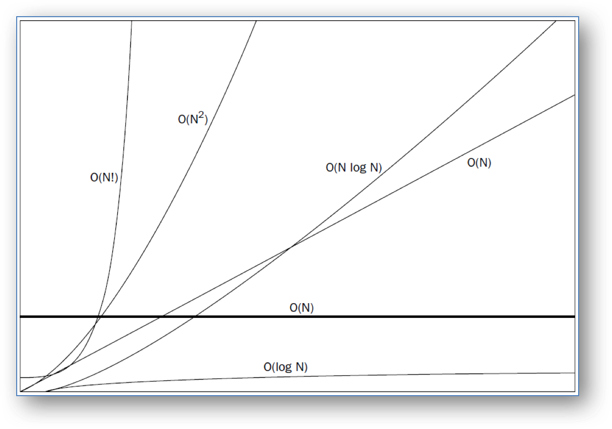
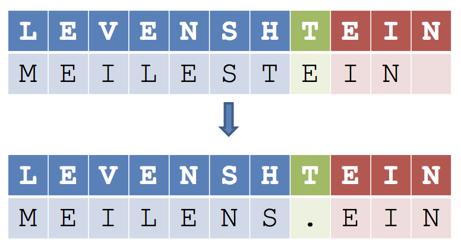
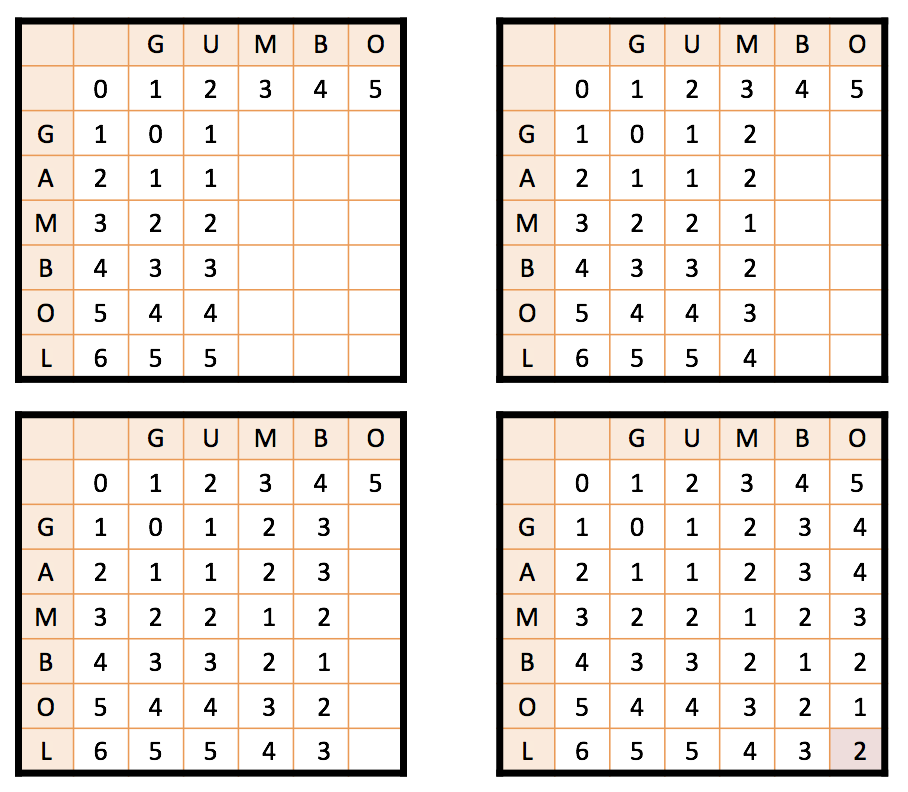
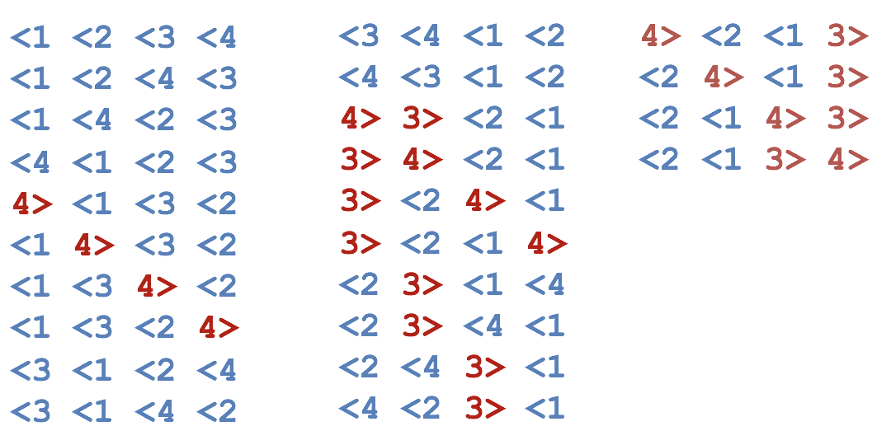
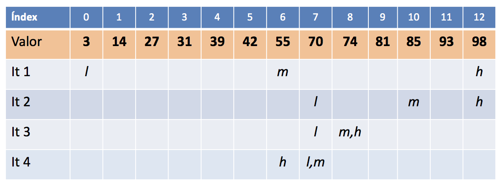
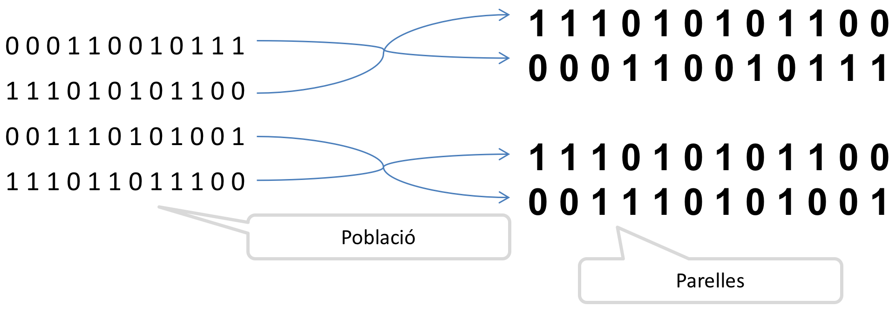

class: center, middle <center><img src="images/ub.png" width="150"></center> # **ALGORÍSMICA** ## Apunts de l’assignatura Jordi Vitrià .blue[jordi.vitria@ub.edu] | .blue[http://algorismica.github.io] --- class: center, middle, inverse ## http://algorismica.github.io --- # Índex + [Presentació de l'assignatura](#tema0) + Tema 1: [Què és un algorisme?](#tema1) + Tema 2: + [Python I](#tema21) + [Python II](#tema22) + [Python III](#tema23) + Tema 3: Algorismes Numèrics + [Aritmètica Bàsica](#tema3) + [Aritmètica Modular](#modular) + Tema 4: [Algorismes per Text](#tema4) + Tema 5: [Algorismes i Força Bruta](#tema5) + Tema 6: [Dividir i vèncer](#tema6) + Tema 7: [Algorismes de Cerca](#tema7) + Tema 8: [Hashing i Cerca](#tema8) --- name:tema0 class: center, middle, inverse ## Presentació de l'assignatura --- ## Què és aquesta assignatura? Aquesta assignatura està adreçada a donar la formació bàsica als estudiants sobre l’anàlisi i disseny d’algorismes, tant des d’un punt de vista teòric com aplicat. No s’assumeix cap formació prèvia en programació de l’estudiant. ##Què s’espera dels estudiants matriculats? Els estudiants han de participar de forma activa durant les classes magistrals de teoria (**1,5 hores a la setmana**). Durant les hores teòrico-pràctiques (o de problemes, **1,5 hores cada setmana, per 10 sessions**) hauran de dissenyar solucions algorísmiques als problemes plantejats pels professors. Durant les hores presencials de pràctiques (*1,5 hores cada setmana, per 10 sessions**) hauran de programar de forma individual una sèrie d’exercicis pràctics. Les hores no presencials de l’assignatura (4 hores a la setmana) les han de dedicar a l’estudi i a la preparació dels problemes i pràctiques. --- ## Programarem? Tot i que en aquesta assignatura no és estrictament necessari programar, ho farem amb un llenguatge d’alt nivell: Python. ## Com s’organitza l’assignatura? Usarem dues eines per distribuir la informació i organitzar la feina: el **Campus Virtual** de la UB. --- ### El campus virtual + Apunts de teoria + Conjunt de problemes + Enunciat de les pràctiques + Lliurament de les pràctiques + Avaluacions de les proves i pràctiques --- ## Com s’avaluarà l’assignatura? (I) L’assignatura seguirà un esquema d’avaluació continuada, amb dos elements principals: proves presencials i lliurament remot d’exercicis. + Lliurament via campus virtual de pràctiques (LP): Els professors proposaran una sèrie de pràctiques que hauran de ser lliurades via el campus virtual per part de l’alumne dins el període assenyalat pel professor. Cada un dels lliuraments serà avaluat pel professor amb una nota que pot anar de 0 (nota mínima) a 10 (nota màxima). En cas de no lliurar les pràctiques dins el període assenyalat, l’alumne obtindrà un 0. La nota final (LP) de la part de lliurament de pràctiques serà la mitja de tots els lliuraments. + Proves presencials (PP): durant el curs, l’alumne realitzarà varies proves escrites (teòrico-pràctiques) davant del professor. Les proves s’avaluaran amb una nota de 0 (nota mínima) a 10 (nota màxima). La nota final (PP) d’aquesta part serà la mitja de totes les proves realitzades (una prova no realitzada = 0). La nota segons l’avaluació continuada (NF) es calcularà de la següent manera: + Si (LP>4,0 i PP>4,0): NF = PP * 0,6 + LP * 0,4 + Sinó, NF = min(4.0, PP * 0,6 + LP * 0,4). --- ## Com s’avaluarà l’assignatura? (II) Durant la segona prova presencial (Gener) es donarà l’opció de presentar-se de tota l’assignatura o només de la segona part. Si un alumne opta per fer un segon intent amb la segona part de l'assignatura, en la nota de proves presencials es tindrà en compte la nota millor dels dos intents. Tots aquells alumnes que obtinguin una NF>=3,5 tenen dret a una reavaluació al cap d’un dies de la publicació de NF. La reavaluació serà equivalent a un examen final. En aquests casos, la nota final de l’assignatura serà la nota de la reavaluació. --- ##I el lliurament de problemes...? No hi ha una activitat pròpia de lliurament de problemes, però l’alumne anirà construint un portafolis de problemes que el professor pot revisar en qualsevol moment. La part pràctica de les proves presencials estarà basada en aquests problemes. El campus virtual proporciona informació sobre QUAN s’ha resolt els problemes. Per valorar aquesta activitat el professor tindrà en compte tant el QUÈ com el QUAN. --- ## Calendari de proves Tots els exàmens es fan en període no lectiu. + La primera prova presencial es farà el 5 de novembre de 15h a 18h es farà . + La segona prova presencial (examen final) es farà el 18 de gener de 15h a 20h. + La reavalaució es farà el 31 de gener de 15h a 20h. --- ## Bibliografia ### Algorísmica + T. H. Cormen [et al.] Introduction to algorithms, MIT Press, 2001. + S.Dasgupta. Algorithms, McGrawHill, 2006.www.cs.berkeley.edu/~vazirani/algorithms/all.pdf + V. Levitin, Introduction to the Design and Analysis of Algorithms, ISBN: 0-201-74395-7, Addison-Wesley (2ond edition) + S. Skiena. The Algorithm Design Manual, Springer; 2nd edition (August 21, 2008), Language: English, ISBN-10: 1848000693. ### Python + A. Downey, J. Elkner and C. Meyers. How to Think Like a Computer Scientist. Learning with Python. http://greenteapress.com/thinkpython/thinkCSpy/ --- class: center, middle, inverse name:tema1 # Tema 1: **Què és un algorisme?** --- class: summary ### Resum del tema 1 + **Conceptes**: + Algorisme, + Input(entrada), + Output(sortida), + Correcció, + Eficiència, + Errors, + Llenguatge de programació + Primitives (símbols), sintaxi, semàntica estàtica, semàntica + --- ## Què és un algorisme? > Definició de la *Wikipedia*: Un algorisme és una seqüència finita, no ambigua i explícita, d’instruccions per a resoldre un problema. La definició d’aquesta assignatura: .bold[Un algorisme és qualsevol procediment computacional que pren un (o una sèrie) de dades/valors com a *entrada* i genera alguna dada/valor (o sèrie de dades/valors) com a *sortida*.] + Els algorismes són les **idees/estratègies** que hi ha darrera els programes per resoldre un determinat problema. + Els algorismes són independents del llenguatge en que estan escrits. El mateix algorisme escrit en dos llenguatges diferents pot tenir una aparença superficial molt diferent. + Els algorismes sí que depenen de la representació de les dades. + Els algorismes interessants són els que resolen problemes generals. Els problemes específics es resolen reduïnt-los a problemes generals. --- ### Exemple computacional (arrel quadrada) Problema a resoldre mitjançant un algorisme: > Entrada: Un nombre `a` > Sortida: Un nombre `b` tal que `b*b=a` > Requeriment: Volem una solució **correcta i eficient**! -- Hi ha diversos algorismes per calcular aquest valor. El que s'explica a l'escola és un d'ells. Heró d’Alexandria (10 dC-70 dC) ja en va proposar un altre: + Comencem amb un nombre qualsevol `g`. + Mentre `g*g` no s’assembli prou a `a`: + Calculem un nou candidat `(g+a/g)/2`. + Donem com a resultat l'últim valor de `g`. --- ### Exemple computacional (arrel quadrada) Codificació en Python: ```python def hero(a,error): import math g = 1.0 while math.fabs(g*g - a) > error: #fabs vol dir nombre absolut en decimals g = 1/2*(g+a/g) return g ``` Si executem `hero(49,0.0001)`, l'ordinador retorna `7.000000141269659`. --- ## Correcció i Eficiència Algorísmica Un algorisme és **correcte** si podem demostrar que retorna la sortida desitjada per a qualsevol entrada legal (per al problema de l’arrel quadrada, això vol dir nombres positius o 0). > Demostrar la *correcció* és fàcil per alguns algorismes, difícil per la majoria i fins i tot impossible per alguns! -- Un algorisme és **eficient** si es fa amb el mínim nombre de recursos (cicles de càlcul / temps, memòria / espai) possible. > Fer servir algorismes eficients és sempre convenient i moltes vegades una necessitat! --- ## Algorismes i ordinadors Un ordinador fa només dues coses (però molt ben fetes!): + calcular (combinar dades per obtenir altres dades); + emmagatzemar (llegir/escriure a una memòria) els resultats del càlcul. Un ordinador convencional fa més de 1.000.000.000 de càlculs per segon i pot emmagatzemar més de 1.000.000.000.000 de bits. Els algorismes que veurem en aquest curs són procediments per a resoldre problemes que estan basats en el càlcul i emmagatzament de dades en un ordinador convencional. No veurem algorismes: + basats en càlcul paral·lel ni distribuït entre diversos ordinadors; + basats en arquitectures no convencionals (p.e. quàntica). --- ## Exemple: el problema del viatjant de comerç (TSP). Aquest cartell correspon al concurs promogut per *Procter & Gamble* l’any 1962 per recorrer 33 ciutats dels EUA: <center><img src="images/tsp.png" width="300"></center> Anem a proposar algorismes per solucionar-ho! --- ### Estratègies possibles Suposem que hem de passar per un conjunt de punts definits i volem minimitzar la distància recorreguda. A la figura de la dreta tenim una possible instància del problema. A l'esquerra hi ha la millor solució d'aquesta instància, **la que voldriem trobar amb un algorisme que acceptés com a entrada qualsevol conjunt de punts**.red[*]. <center><img src="images/recorregut.jpg" width="650"></center> .footnote[.red[*] A la major part dels casos que resoldrem en aquest curs o tindrem accés a la solució correcte del problema o podrem fer un programa molt simple que, donada una solució, comprovi que és correcte. En el cas del problema del viatjant de comerç, no tindrem ni una cosa ni l'altra!] --- ### Propostes **Solució I**: Escollim un punt aleatori per començar, i anem creant un recorregut seleccionant el *veí més proper* a cada pas. <center><img src="images/recorregut2.jpg" width="650" alt="la solució I resol el problema però amb un recorregut no eficient, al costat es presenta la solució òptima"></center> És correcte? -- > Sabem que **no ho és** perquè tenim accés a un *oracle* que ens diu quina és la solució correcte. Més endavant veurem quines opcions tenim si no tenim accés a l'oracle. --- ### Propostes **Solució II**: + Considerem el conjunt format per **tots el possibles passos parcials entre dues ciutats** i calculem la seva longitud. + Mentre ens quedin passos parcials al conjunt: + Busquem al conjunt el pas parcial més petit `p`. + Afegim `p` al recorregut final sempre i quan no generi un cicle o una doble sortida per un punt. + Eliminem `p` del conjunt de passos parcials. És correcte? -- **Solució III**: Considerem **totes les possibles ordenacions** dels punts, calculem la distància de cada un dels recorreguts i seleccionem la més curta. És correcte? --- ### Solucions correctes i eficients! La solució III anterior **és correcta** però **no és eficient**. > No cal demostrar que és correcte: és trivial! > El nombre de possibles ordenacions d'un conjunt de `n` elements ve donat pel concepte de factorial: `n! = n x (n-1) x (n-2) x ... x 1`. > El factorial d'un nombre `n` creix molt ràpidament quan `n` es fa gran. Aquest pot ser un nombre molt gran fins i tot pels ordinadors. --- ## Com expressem els algorismes? Amb **llenguatges de programació**. Un llenguatge de programació es defineix per unes **primitives** (símbols), una **sintaxi** (regles de combinació de símbols), una **semàntica estàtica** (combinacions de símbols amb significat) i una **semàntica** (el significat que nosaltres volem donar a l’algorisme). -- Fins ara hem usat *paraules* o pseudocodi, però també podem usar un llenguatge d’alt nivell, **Python**, molt proper al pseudocodi. El preu que hem de pagar és que haurem d’**especificar** una mica més les coses. Els avantatges: + aprenem un llenguatge útil; + som més formals en les especificacions; + podem executar-los i fer simulacions. --- ## Llenguatges + **Símbols**: Són la forma d'escriure variables (p.e. `a`), instruccions (p.e. `print()`), etc. Hi ha una sèrie de regles que els defineixen. + **Sintaxi**: Són les regles que defineixen les combinacions vàlides de símbols: `3.2 + 4.5` és vàlida, però `3.2 a 2.3` no ho és. + **Semàntica estàtica**: `3.2/’abc’` és sintàcticament correcte perquè l’expressió (`<literal><operador><literal>`) ho és, però no ho és des del punt de vista de la semàntica estàtica. > Els errors més perillosos quan programem no són els sintàctics, atès que la majoria es poden detectar automàticament o són fàcils de veure! > Alguns llenguatges detecten quasi tots els errors de semàntica estàtica, però Python només alguns! + **Semàntica**: Es refereix a "què" fa el programa (p.e. aquest programa calcula l'arrel quadrada?) i per tant depèn totalment del programador. --- ## Llenguatges Si no hi ha errors sintàctics ni de semàntica estàtica el programa s'executarà i farà alguna cosa, però no necessàriament la que volem. Els *entorns de programació* (IDE) ens poden ajudar a detectar els errors sintàctics i alguns errors de semàntica estàtica, però no els semàntics. Aquest programa no donarà mai cap error: ```python def suma(a,b): ''' Aquest programa no fa el que ha de fer! ''' return a - b ``` Els únics que podem determinar que no és correcte sóm nosaltres. --- ## Llenguatges Si un programa té un error que no ha estat detectat: 1. Pot acabar inesperadament la seva execució i generar un error. La majoria de vegades no afecta a la resta de programes de l’ordinador, però hi ha errors que poden causar un error fatal a l'ordinador i aturar-lo.red[*]. En aquest cas, la majoria d'errors són errors de sintaxi o de semàntica estàtica no detectats per l'IDE. 2. Pot ser que mai s’aturi i per tant no generi la resposta. En aquest cas normalment estem davant d'un problema semàntic. 3. Pot aturar-se i generar una resposta que pot ser incorrecta. En aquest cas normalment estem davant d'un problema semàntic. .footnote[.red[*]Pot ser que els errors només es manifestin per alguna combinació específica dels valors d'entrada i per tant no es detectin sense fer moltes proves. Normalment no podem provar totes les possibilitats!] --- class: exam ### Possibles preguntes d'exàmen relacionades amb el tema1 1. Quines són les dues característiques que defineixen un algorisme? 2. Quins errors són més difícils de corregir i perquè? --- class: center, middle, inverse name:tema21 # Tema 2: **Python** --- class: summary ### Resum del tema 2 (I) + **Conceptes de programació**: + Instrucció, + funció, + paràmetres, + crida/invocació, + noms, + expressions, + literals, + comentaris, + variables, + iteracions definides / bucles, + biblioteques (libraries) de funcions / mòduls, + assignacions + asssignacions simples, d'entrada, simultànies --- class: summary ### Resum del tema 2 (II) + **Llenguatge Python**: + com crear funcions i blocs de codi + def, + print(), + input i eval(input), + for i in range(star,stop,step), + índex, + operació **, + abs(), + %, + import math, + math.sqrt --- # Python Si volem executar una seqüència d’instruccions podem **crear/definir** una **funció** (que en aquest cas s’anomena `hola`): ```python def hola(): print("Hola!") ``` Un cop la tenim definida la poden **cridar/invocar**: ```python hola() > Hola! ``` El símbol `>` indica una resposta de l'ordinador a través de la pantalla. Una funció **no fa res si no la cridem**: ```python def hola(): print("Hola!") ``` per si sol no mostra res a pantalla. --- ## Un programa en Python Les funcions poden tenir **paràmetres** (que van entre els parèntesi): ```python def hola(persona): print("Hola", persona) ``` Que quan es criden han de prendre un valor: ```python hola("Jordi") > Hola Jordi ``` .code[Consola Python: [Exec](https://www.python.org/shell/)] --- ## Un programa en Python En aquest programa podem veure diversos elements del llenguatge: + comentaris, + variables, + assignacions, + iteracions, + entrada de dades des del teclat, + crida de la funció, + etc. ```python def main(): ''' Comportament caòtic ''' print("Aquest programa implementa un comportament caòtic") x = input("Entra un nombre entre 0 i 1: ") x = float(x) for i in range(10): x = 3.9 * x * (1-x) print(x) main() ``` .code[Consola Python: [Exec](https://www.python.org/shell/)] --- ## Un programa en Python Els elements més importants que tenim per a construir un programa Python són: + **Noms**. Els fem servir per anomenar les funcions i les variables. + Tècnicament s’anomenen identificadors. Han de començar per lletra o `_` que pot ser seguit per qualsevol seqüència de lletres, dígits o subratllats (no espais!). + Distingeixen entre majúscules i minúscules. + Hi ha noms reservats (`and`, `for`, `def`, etc.). + **Expressions**: Són la part de codi que calcula o produeix nous valors de les dades. + L’expressió més simple s’anomena literal, i s’usa per especificar un valor. Hem vist literals numèrics. Un identificador simple també pot ser una expressió (el nom d’una variable). + Podem crear expressions combinant expressions més simples amb operadors: `3.9 + x * (1-x)` + Els operadors matemàtics segueixen les precedències estàndard. --- ## Un programa en Python + **Sortides**. Hi ha la funció `print`, amb els següents arguments: `print(value1, value2,..., sep=' ', end='\n')` + **Assignacions**. + Assignacions simples: `x = 3 + x * (1-x)` + Assignacions d’entrada: `x = input("Entra un valor: ")`. A més a més de nombres, podem entrar qualsevol expressió i avaluar-la: ```python a = eval(input("Entrada: ")) a > Entrada: 3+4+5 > 12 ``` --- ## Un programa en Python + Assignacions simultànies, com per exemple: `sum, diff = x+y, x-y` Aquest tipus d’assignació pot ser molt útil, com per exemple per intercanviar els valors de dues variables. Això no funciona!: ```python x = 3 y = 4 x = y y = x print(x,y) > 4 4 ``` Com ho faríeu? -- ```python x = 3 y = 4 x,y = y,x print(x,y) > 4 3 ``` --- ## Un programa en Python + Iteracions (*loops*) definides. Es fa un nombre definit de vegades, i són el tipus més simple d’iteració. ```python for i in range(10): print(i, end=" ") > 0 1 2 3 4 5 6 7 8 9 for j in [0,1,2,3]: print(i*i, end=" ") > 0 1 4 9 ``` --- ## Els nombres i Python Les dades que un programa pot manipular i emmagatzemar són de diferents tipus. El tipus de la dada determina quins valors pot tenir i quines operacions es poden fer. ```python type(3) > int type(3.14) > float x = -32 type(x) > int print(3+4, 3+4.0) > 7 7.0 print(10.0/3, 10/3) > 3.3333333333335 3.3333333333335 ``` Els operadors bàsics són: `+`, `-`, `*`, `/`, `**`, `%`, `abs()`. `**` indica la potència, `%` el mòdul, i abs() el valor absolut. Què dona `3**2`, `10%3`, i `abs(-4)`? --- ## Els nombres i Python Python també ens dona funcions matemàtiques dins d’una biblioteca (*library*) especial anomenada `math`. Una biblioteca no és res més que un mòdul que conté definicions útils de funcions. ```python import math def main(a,b,c): x = (-b+math.sqrt(b**2-4*a*c))/2*a print(x) ``` Quan treballem amb nombres, la funció `range` pot ser molt útil. La seva sintàxi és `range(start, stop, step)`. ```python list(range(10)) > [0,1,2,3,4,5,6,7,8,9] list(range(0,10,3)) > [0,3,6,9] list(range(0,-4,-1)) > [0,-1,-2,-3] ``` --- ### Exemple: el factorial d'un nombre. ```python def factorial(num): factorial = 1 if num < 0: print("Entra un enter positiu! ") elif num == 0: print("El factorial de 0 és 1") else: for i in range(1,num+1): factorial *= i print("El factorial de ", num, "és", factorial) ``` --- ### *Exemple explicat: el factorial d'un nombre* ```python def factorial(num): # definim la funció factorial amb un paràmetre factorial = 1 if num < 0: # condicional print("Entra un enter positiu! ") # només s'executa si es compleix la condició elif num == 0: # condicional print("El factorial de 0 és 1") # només s'executa si es compleix la condició else: # alternativa als condicionals for i in range(1,num+1): # 1,2,3...num factorial *= i # factorial = factorial * i print("El factorial de ", num, "és", factorial) ``` --- ## Python Help + [Lloc Web de Python](https://www.python.org/) + [Documentació](https://docs.python.org/3/) --- class: center, middle, inverse name:tema22 # **Python (2)** --- ## Cadenes de caràcters (*strings*) Un string és una seqüència de caràcters, que es pot emmagatzemar en variables: ```python a = 'Hola' b = "Mireia" print(a,b) > Hola Mireia type(str2) > str ``` Podem entrar *strings* des del teclat: ```python nom = input("Quin és el teu nom?") ``` De fet, tot el que entra pel teclat és una cadena de caràcters. Si volem entrar dades d'un altre tipus ho hem de fer així: ```python edat = eval(input("Quina és la teva edat?")) ``` `eval` interpreta el que entrem com una expressió Python i l'avalua. --- ## Cadenes de caràcters (*strings*) Per accedir a una cadena de caràcters hem de veure com Python les indexa: H | o | l | a | | o | l | a - | - | - | - .code[0] | .code[1] | .code[2] | .code[3] | .code[4] | .code[5] | .code[6] | .code[7] Llavors podem accedir als valors de cada element de la cadena o fins i tot a subcadenes: ```python s = "Hello Bob" x = 8 print(s[0], s[1], s[x-2]) > H l B ``` Una operació anomenada *slicing* ens permet accedir a subcadenes de caràcters: ```python print(s[0:3], s[6:9], s[:3], s[3:], s[:]) > Hel, Bob, Hel, lo Bob, Hello Bob ``` --- ## Cadenes de caràcters (*strings*) També podem concatenar (`+`) i repetir (`*`) subcadenes: ```python print("Bread" + " & " * 3 + "Breakfast") > Bread & & & Breakfast len("Bread" + " & " * 3 + "Breakfast") > 23 ``` Exemple: ```python def mes(): mesos = "GenFebMarAbrMaiJunJulAgoSetOctNovDes" n = eval(input("Quin mes vols?")) pos = (n-1) * 3 m = mesos[pos:pos+3] print("L'abreviatura és: ", m) ``` --- ## Cadenes de caràcters (*strings*) L’ordinador emmagatzema els caràcters de forma numèrica. Una forma estàndard s’anomena codificació **ASCII** (*American Standard Code for Information Interchange*), però tal i com el nom indica, no considera els caràcters que no s’usen en l’anglès. Usa 7 bits per caràcter. Per això hi ha el sistema **UniCode**, que considera els caràcters de totes els llengües. Usa 16 bits per caràcter. Per compatibilitat, és un superconjunt de l’ASCII. Python ens dóna funcions per accedir a aquests codis: ```python ord('A') > 65 ord('a') > 97 chr(97) > a ``` --- class: center ## Taula ASCII <center><img src="images/ascii.png" width="650" alt="codi i caràcter corresponent, buscar a la wikipèdia"></center> --- ## Cadenes de caràcters (*strings*) Amb la funció `split` puc separar una cadena en una llista en diferents parts, indicant el caràcter separador: ```python cadena = "458.342.120€" llista = cadena.split('.') > ['456', '342', '120€'] ``` Si no indiquem el separador, per defecte és el caracter blanc. ```python cadena = "El gos i el gat, menjàven plegats" llista = cadena.split('.') > ['El', 'gos', 'i', 'el', 'gat,', 'menjàven', 'plegats'] ``` --- ## Cadenes de caràcters (*strings*) `join`: Un dels usos més estesos de `join` consisteix en convertir llistes a cadenes de caràcters. ```python llista = ['El', 'gos,', 'i', 'el', 'gat,', 'menjàven', 'plegats.'] cadena=" ".join(llista) # l'espai farà de separador print(cadena) > El gos, i el gat, menjàven plegats. ``` `strip`: Elimina els caràcters indicats de l'inici i del final de la cadena, o els espais en blanc si no s'indiquen caràcters específics. ```python "introducció a Python".strip('nio') > 'troducció a Pyth‘ " introducció ".strip() > 'introducció‘ ``` `islower`, `isupper` i `isalpha`: Verifiquen si la cadena és majúscules, minúscules o tota de lletres respectivament. `lower` i `upper`: Converteixen la cadena de majúscules a minúscules i de minúscules a majúscules respectivament. --- ## Funcions Fins ara hem escrit tots els programes en una única funció. Per diverses raons (economia a l’escriure, manteniment del software, disseny) i sobretot quan resolem problemes més complexos val la pena fer servir diferents funcions. Cada funció resoldrà una part del problema, serà com un subprograma, o un programa dins del programa. Recordem que les funcions no són res més que una seqüència d’instruccions amb un nom. Una funció es pot cridar des de qualsevol lloc del programa pel seu nom. ```python def sum(a,b): return a+b a = 3 b = a*2 c = sum(a,b) c > 9 ``` --- ## Funcions *Scope* és el nom que donem als **llocs d’un programa** en els que *es pot fer referència* a una variable. Només es pot fer referència a les variables definides dins d’una funció dins la pròpia funció, són locals, i per això poden tenir el mateix nom que variables externes. L’única manera que té una funció per veure les variables d’una altra funció és passar-li com a paràmetre. Exemple: ```python a = 7 def assignacio(): a = 5 print("dins, a val ", a) assignacio() print("fora, a val ",a) ``` Què es mostrarà a pantalla? --- ## Crida de funcions Quan Python rep la crida d’una funció, fa quatre coses: + El programa que fa la crida se suspèn/congela en el punt de la crida. + Els paràmetres de la funció passen a prendre els valors de la crida. + S’executa el cos de la funció. + Retorna el control al punt de programa posterior a la crida. ```python def sum(a,b): return a+b def dif(a,b): return a-b def sumdif(a,b): s = sum(a,b) d = dif(a,b) return s,d a = 3 b = 3 print(sumdif(a,b)) > 6 0 ``` --- ## Crida de funcions Veiem-ho amb [Code Skulptor](http://www.codeskulptor.org/viz/index.html) <center><img src="images/CodeSkulptor.JPG" width="80%" alt="Codi de la funció anterior amb un punt de control a s = sum(a,b) i amb l'execució de la funció sum(a,b) a mitges dins l'entorn de CodeSkulptor"></center> --- ## Operadors relacionals Els operadors relacionals ens permeten combinar expressions. El seu resultat és un valor *booleà (True[1] o False [0])*. Podem comparar tot tipus de dades: ```python 3<4 > 1 3*4 < 3+4 > 1 "hello" < "Hello" > 0 ``` Els operadors són: ``` < # menor que <= # menor o igual que == # igual que >= # major o igual que > # major que != # diferent que ``` --- ## Operadors booleans Els operadors booleans ens permeten combinar expressions lògiques. El seu resultat és un valor booleà. ```python a = True b = False c = a and b print(c) print(a and b or c) print(a or (not b) and c) ``` `and`: és veritat si i només si els dos operands ho són. `or`: és veritat si al menys un dels dos operands ho és. > Quin és el resultat de cada expressió? --- ## Estructures de control Quan volem canviar el fil del programa en funció de si es compleix una condició o no, farem servir l'estructura `if`: ```python if a==0: print("valor neutre") elif a < 0: print("valor negatiu") elif a == 1: print("valor unitat") else: print("altres valors") ``` Els `elif` són opcionals. En podem posar tants com vulguem. --- ## Exemple Càlcul del promig d'una seqüència de nombres: ```python def mitja(): n = eval(input("Quants nombres tens?")) suma = 0.0 for i in range(n): x = eval(input("Entra un nombre: ")) suma = suma + x return("La mitja és: ", suma/n) ``` És correcte, però no gaire pràctic. Per què? --- ## Estructures de control Per solucionar el problema anterior podem usar un altre *estructura de bucle*: `while`. ```python i = 0 while i < 10: #les instruccions s'executaran mentre es compleixi la condició print(i) i += 1 ``` Llavors podem reescriure el programa anterior com: ```python def mitja(): suma = 0.0 comptador = 0 mesnombres = "s" while mesnombres[0] == 's': x = eval(input("Entra un nombre: ")) suma += x comptador += 1 mesnombres = input("Hi ha més nombres (si o no)?") return suma/comptador ``` Però encara podem fer més eficient aquest codi! --- ## Estructures de control ```python def mitja(): suma = 0.0 comptador = 0 x = eval(input("Entra un nombre (negatiu per acabar): ")) while x > 0: suma += x comptador += 1 x = eval(input("Entra un nombre (negatiu per acabar): ")) return suma/comptador ``` -- ```python def mitja(): suma = 0.0 comptador = 0 xStr = input("Entra un nombre (<Enter> per acabar): ") while xStr != "": x = eval(xStr) suma += x comptador += 1 xStr = input("Entra un nombre (<Enter> per acabar): ") return suma/comptador ``` --- class: center, middle, inverse name: tema23 # **Python (3)** --- ## Col·lecions de dades Exemples de col·leccions: + Paraules d’un text. + Estudiants d’un curs. + Dades d’un experiment. + Clients d’un negoci. + Els gràfics que es poden dibuixar en una finestra. Python ens dona suport per a la manipulació d’aquest tipus de dades. -- Suposem que volem calcular la **mitja** i la **desviació estàndard** d'un conjunt de `n` nombres. $$ \mu = \frac{1}{n} \sum_{i=1}^n x_i $$ $$ \sigma = \sqrt{\frac{\sum_{i=1}^n (x_i - \mu)^2}{n-1}} $$ Quin problema tenim? --- ## Col·lecions de dades El que necessitem és emmagatzemar una col·lecció de coses (a priori no sabem quantes) en un “objecte”. De fet, aquest tipus d’*objecte* ja l’hem fet servir, i es diu llista: ```python list(range(10)) > [0,1,2,3,4,5,6,7,8,9] a='ABCD' a.split() > ['A','B','C','D'] ``` -- Una llista és una **seqüència ordenada de coses**. Els elements d'una llista s'indexen de la mateixa manera que una cadena de caràcters. De fet les llistes i els strings són conceptualment molt semblants, i podem aplicar-hi operadors semblants. La diferència és el que contenen. Les llistes poden contenir **qualsevol tipus de dades**, incloent “classes” definides pel programador. Les llistes són **mutables**, és a dir, es poden canviar sobre la mateixa estructura (els strings no!). --- ## Col·lecions de dades Les llistes en Python són **dinàmiques**, poden créixer i decréixer durant l’execució del programa. Les llistes en Python són **inhomogènies**, poden contenir tipus diferents de dades. En resum, les llistes són **seqüències mutables d’objectes arbitraris**. Es creen així: ```python a = [1,3,5,7,0] b = ['spam', 0, 3.9] c = [] d = [0] * 50 ``` Podem afegir-hi o borrar coses: ```python nums = [] x = eval(input("Entra un nombre: ")) while x >= 0: nums.append(x) x = eval(input("Entra un nombre: ")) del nums[1] ``` --- ## Col·lecions de dades Donada una llista `l`: + `l.append`: afegeix elements al final. + `l.sort`: ordena els elements. + `l.reverse`: inverteix la llista. + `l.index(x)`: retorna l'índex del primer element igual a `x`. + `l.count(x)`: retorna el nombre de vegades que apareix `x`. + `l.remove(x)`: elimina la primera ocurrència de `x`. + `l.pop(i)`: elimina l'ièssim element de la llista i retorna el seu valor. + `x in l`: retorna una valor booleà en funció de si `x` és a la llista o no. Suposant que tenim una llista formada per milers de milions d'elements, podriem ordenar aquestes operacions en funció del temps que trigarien a executar-se? --- ## Exemple ```python def getNumbers(): nums = [] xStr = eval(input("Entra un nombre (<Enter> per acabar): ")) while xStr != "": x = eval(xStr) nums.append(x) xStr = eval(input("Entra un nombre (<Enter> per acabar): ")) return nums def m(nums): suma = 0.0 for num in nums: suma += num return suma/len(nums) def stdDev(nums, mean): import math sumDev = 0.0 for num in nums: dev = mean - num sumDev += dev * dev return math.sqrt(sumDev/len(nums)-1) data = getNumbers() print("Mitja: ", mean(data), " | Desviació: ", stdDev(data, mean(data))) ``` --- ## Referències Cada una de les dades que creem té una referència que podriem entendre com l'adreça de memòria on es pot localitzar. Si executem: ```python a = “banana” b = “banana” ``` `a` i `b` són dos noms diferents amb el mateix valor, però és la "mateixa" cadena de valors o guardem dues vegades a memòria la mateixa cadena de caràcters? -- Cada objecte té un identificador únic, que podem obtenir amb la funció `id`: ```python id(a) > 135044008 id(b) > 135044008 ``` Per tant, en aquest cas Python ha creat una estructura `banana` i les dues variables en fan referència. --- ## Referències Les llistes funcionen diferent (`a` i `b` tenen el mateix valor però no fan referència al mateix objecte): ```python a = [1,2,3] b = [1,2,3] print(id(a),id(b)) > 238870816, 245363636 ``` Com que les variables fan referència a objectes, si una variable fa referència a una altra tenim: ```python a = [1,2,3] b = a print(id(a),id(b)) > 238870856, 238870856 ``` Com que la llista té dos noms, direm que té un **àlies**. Això és perillós per objectes mutables!!! Pels immutables no hi ha problema. --- ## Referències El clonatge és una tècnica per la que fem una còpia de l’objecte en si, no de la referència. Pel cas de les llistes ho podem fer així: ```python a = [1,2,3] b = a[:] b[0] = 5 print(a,b) > [1,2,3] [5,2,3] ``` --- ## Referències Si passem una llista com a **argument** d’una funció, passem una **referència**, no una còpia. Considerem aquesta funció: ```python def head(l): return(l[0]) a = [1,2,3] head(a) > 1 ``` Considerem ara aquesta altra funció: ```python def deleteHead(l): del l[0] return l a = [1,2,3] deleteHead(a) > [2,3] ``` --- ## Referències Si retornem una llista també retornem una referència: ```python def tail(l): return l[1:] a = [1,2,3] rest = tail(a) print(rest, a) > [2,3] [1,2,3] ``` Com que la llista s’ha creat amb `:` és una nova llista. Qualsevol modificació de `rest` no té efectes en `a`. En canvi en el següent cas: ```python numbers = [1,2,3] def test(l): l.reverse() print(numbers) > [3,2,1] ``` --- ## Llistes Una llista imbricada és una llista que apareix com a element d’una altra llista. `l = [0,1,3,['a','b']]` Per obtenir un element d’una llista imbricada ho podem fer de dues maneres: ```python # amb dos passes... li = l[3] li[0] > 'a' # o bé ... l[3][0] > 'a' ``` I és que les llistes imbricades es fan servir per representar matrius: ```python m = [[1,2,3],[4,5,6],[7,8,9]] m[0] > [1,2,3] m[1][1] >5 ``` --- ## Diccionaris Python ens proporciona un altre tipus de col·lecció molt útil: els **diccionaris**. La raó de la seva existència és que no sempre serà possible accedir a una dada pel seu índex, sinó per exemple, per algun valor que el defineix (p.e. un empleat pel seu DNI). És a dir, volem accedir a un valor per una **clau**. Python crea els diccionaris així: ```python passwd = {'bill':'clinton', 'barack':'obama'} ``` I ens permet accedir-hi així: ```python passwd['bill'] > clinton ``` Els diccionaris són mutables: ```python passwd['bill'] = 'gates' ``` --- ## Exemple: omplir un diccionari des d'un fitxer. Suposem que tenim una llista d'usuaris i els seus passwords en un fitxer. El format és una línia per usuari formada per dues paraules: el nom d'usuari i el password. ```python passwords = {} f = open('passwords.txt','r') for line in f.readlines(): usr, passw = line.split() passwords[usr] = passw f.close() ``` --- ## Diccionaris ```python p = {'a':'A', 'b':'B', 'c':'C', 'd':'D'} for i in p.keys(): print(i,end=',') > a,b,c,d for i in p.values(): print(i,end=',') > A,B,C,D for i in p.items(): print(i,end=',') > ('a','A'),('b','B'),('c','C'),('d','D') list(p.values()) > ['A','B','C','D'] 'a' in p > True ``` --- ## Tuples Hi ha una altra classe de col·lecció a Python que és semblant a la llista, però que és immutable: la **tupla**. `t = 'a','b','c','d'` o `t = ('a','b','c','d')` Si només hi ha un element s'ha d'escriure amb una coma final: ```python t = ('a',) type(t) > tuple t = ('a') type(t) > str ``` Les operacions son les mateixes que per les llistes (tenint en compte que són immutables!) --- ## Exemple: Estadística de les paraules d'un document? ```python def numW(): ''' Aquest programa calcula l'estadística de les paraules d'un document ''' fname = input("Nom del document") text = open(fname, 'r').read() text = text.lower() for ch in '!"·$%&/()=?¿|@#¢∞¬÷÷“”≠¡{}[]+-,.;:-_><': text.replace(ch,' ') words = text.split() counts = {} for w in words: if w in counts: counts[w] = counts[w] + 1 else: counts[w] = 1 n = eval(input("Quantes paraules vols analitzar (les més freqüents)?")) lfreq = [] for w in counts: lfreq.append((counts[w],w)) print(lfreq) lfreq.sort(reverse=True) print(lfreq) for i in range(min(n,len(lfreq))-1): print(lfreq[i][1], lfreq[i][0]) ``` --- class: center, middle, inverse name:tema3 # Tema 3: **Algorísmes Numèrics** --- ## Una mica d'història Cap a l’any 600, a l'Índia, es va inventar el sistema decimal de numeració. > Un sistema de numeració és un conjunt de símbols i regles de generació que permeten construir tots els nombres vàlids en el sistema. El seu principal avantatge sobre els que es coneixien a Europa, com el romà, és la seva **base posicional** i la **simplicitat de les operacions** (algorismes) aritmètiques. Els sistemes de numeració romans i egipcis no són estrictament posicionals. Per això, és molt complex dissenyar algoritmes d'ús general (per exemple, per a sumar, restar, multiplicar o dividir). Un sistema de numeració ve definit doncs per: + el conjunt `S` dels símbols permesos en el sistema. En el cas del sistema decimal són `{0,1...9}`; en el binari són `{0,1}`; en l'octal són `{0,1,...7}`; en l'hexadecimal són `{0,1,...9,A,B,C,D,E,F}`. + el conjunt `R` de les regles de generació que ens indiquen quins nombres són vàlids i quins no són vàlids en el sistema. --- ## Bases i representació numèrica Quantes “unitats” hi ha a 642? Depèn de la base en que està escrit! La **base d’un nombre** determina el nombre de dígits diferents i el valor de les posicions dels dígits. 642 és 600 + 40 + 2 en BASE 10. La fòrmula que ens permet entendre una base és: $$ d_n \times R^{n-1} + \dots + d_2 \times R + d_1 $$ on `R` és la base del nombre i `d_i` és el dígit a la posició i-èssima del nombre. $$ 642 = 6_3 \times 10^2 + 4_2 \times 10 + 2_1 $$ DECIMAL és base 10 i té 10 dígits: `0,1,2,3,4,5,6,7,8,9` BINARI és base 2 i té 2 dígits: `0,1` HEXADECIMAL és base 16 i té 16 dígits: `0,1,2,3,4,5,6,7,8,9,A,B,C,D,E,F` --- ## Una mica d'història El sistema decimal de numeració va trigar molts anys en arribar a Europa. El medi de transmissió més important va ser un manual, escrit en àrab durant el segle IX a Bagdad, obra de Al Khwarizmi, en el que especificava els procediments per sumar, multiplicar i dividir nombres escrits en base deu. Els procediments eren precisos, no ambigus, mecànics, eficients i correctes. És a dir, eren algorismes (per a ser implementats sobre paper i no amb un ordinador!). Una de les persones que més van valorar aquesta aportació va ser Leonardo Fibonacci. <center><img src="images/fib.png" width="200" alt="Segell amb el bust de Leonardo Fibonacci"></center> --- ## Una mica d'història Fibonacci és avui conegut sobretot per la seva seqüència: `0,1,1,2,3,5,8,13,21,34...` La seqüència es pot definir amb la següent regla: <center><img src="images/seqfib.png" width="350"></center> Això encara **no és un algorisme**. A les següents pàgines veurem diferents algorismes per implementar computacionalment aquesta definició. --- ## Una mica d'història La seqüència creix molt ràpid i es pot demostrar que el terme `n`-èssim de la seqüència té aproximadament aquest valor: $$ F_n \approx 2^{0.694n} $$ Però per calcular **exactament** un terme concret necessitem un algorisme! Una primera possibilitat és aquesta (*algorisme recursiu*).red[*]: ```python def fib1(n): if n==0: return n if n==1: return n else: return fib1(n-1) + fib1(n-2) fib1(10) > 55 ``` .footnote[.red[*]Un algorisme recursiu és un algorisme que es crida a si mateix.] --- ## Algorisme recursiu de Fibonacci <center><img src="images/fib1.png" width="650"></center> --- ## Algorisme recursiu de Fibonacci Com per a qualsevol algorisme, ens podem fer tres preguntes (**les tres preguntes bàsiques de l'algorísmica**): + És correcte? + Quant trigarà, en funció de `n`? + Hi ha alguna manera millor de fer-ho? -- I les respostes són: + En aquest cas és evident que si, atès que segueix exactament la definició! + Es pot demostrar que el nombre de passos computacionals que fa és de l'ordre de `F_n`. Per calcular el terme 200 hauria de fer de l'ordre de `2^138` passos. A l’ordinador més ràpid del món, que pot executar al voltant de 40.000.000.000.000 passos per segon, necessitaríem més temps que el necessari pel col·lapse del Sol! A la velocitat que els ordinadors augmenten la seva capacitat de càlcul, cada any que passa podríem calcular un nombre de Fibonacci més que l’any anterior! + Sí. Per què és tant lent? --- ## Algorisme recursiu de Fibonacci <center><img src="images/fib2.png" width="550"></center> Hi ha molts càlculs que es repeteixen! Perquè no guardar-los? --- ## Algorisme de Fibonacci Anem a fer-ne una versió basada en llistes: ```python def fib2(n): if n==0: return 0 ls = [0,1] for i in range(2,n+1): ls.append(ls[i-1]+ls[i-2]) return ls[n] ``` + És evident que és correcte. + Només executa `(n-1)` vegades la iteració. Direm que `fib2(n)` és lineal (o polinòmic) respecte `n`. Ara podem calcular fins i tot `fib(100.000.000)`. -- Però encara ho podem fer millor! --- ## Algorisme de Fibonacci ```python def fib3(n): a,b = 0,1 for i in range(1,n+1): a,b = b, a+b return a fib3(10) > 55 ``` --- ## Com hem de comptar els passos computacionals? Considerarem de la mateixa categoria les instruccions simples com emmagatzemar a memòria, *branching*, comparacions, operacions aritmètiques, etc. ```python import math a = 5 b = 4 for i in range(3): a += math.sqrt(a+b) ``` Però si manipulem nombres molt grans (que ocupen més de 64 bits), aquestes operacions no són tan barates! ```python import math a = 1234585127527575235234982374598245 b = 8112387512759287512875851285789127 for i in range(327864287686868676876876876887986): a += math.sqrt(a+b) ``` Caldrà tenir en compte quina complexitat computacional té operar dos nombres d’aquestes característiques. --- ## La notació Gran O Aquesta notació és una convenció per no ser ni massa ni massa poc precisos a l’hora d’escriure la complexitat computacional d’un algorisme (= nombre de passos). La regla principal és **comptar el nombre de passos computacionals aproximats en funció de la mida de l'entrada**. Fem la següent aproximació: enlloc de dir que té una complexitat de `5 n^3 + 4 n + 3` direm que té una complexitat de `O(n^3)` En general utilitzarem aquestes convencions: + Ometrem les constants multiplicatives: `14n^2 és n^2`. + `n^a` domina sobre `n^b` si `a>b`: `n^2` domina sobre `n`. + Qualsevol exponencial domina sobre un polinomi: `3^n` domina sobre `n^5` (i també sobre `2^n`). + Qualsevol polinomi domina sobre un logaritme: `n` domina sobre `log(n)^3` i `n^2` domina sobre `nlog(n)`. --- ## La notació Gran O <center></center> --- ## La notació Gran O <center><img src="images/grano2.png" width="750"></center> Observacions: + Qualsevol algorisme amb `n!` és inútil a partir de `n`=20 + Els algorismes amb `2^n` són inútils a partir de `n`=40 + Els algorismes quadràtics, `n^2` comencen a ser costosos a partir de `n`=10.000 i a ser inútils a partir de `n`=1.000.000 + Els algorismes lineals i els `nlog(n)` poden arribar fins a `n`=1.000.000.000 + Els algorismes sublineals, `log(n)`, són útils per qualsevol `n`. --- ## La notació Gran O Les famílies més importants d’algorismes són les que tenen un ordre: + Constant, `O(n) = 1`, com `f(n) = min(n,1)`, que no depenen de `n`. + Logarítmic, `O(n) = log(n)`. + Lineals, `O(n) = n`. + Super-lineals, `O(n) = nlog(n)`. + Quadràtics, `O(n) = n^2`. + Cúbics, `O(n) = n^3`. + Exponencials, `O(n) = c^n` per `c`>1. + Factorials, `O(n) = n!` --- ## Aritmètica Bàsica: Preliminar Quants dígits necessitem per representar un nombre `N` en base `b`? + Si tenim `k` dígits en base `b` podem representar els nombres fins a `b^k -1`. Per tant, necessitem `log_b (N+1)` dígits per escriure `N` en base `b` (això surt d'aillar `k` a l'equació `b^k -1 = N`). Veiem un exemple: k=5, b=2, Si tenim 5 dígits en base 2, podem representar fins a 2^5 -1 = 32 - 1 = 31, efectivament 11111 = 16 + 8 + 4 + 2 + 1 = 31 Per altra banda, necessitarem log_2 (31+1) dígits per escriure 31 en base b => 5 dígits Quan fem un canvi de base la mida del nombre només es veu afectada per un factor multiplicatiu, i per tant considerem que no canvia! --- ## Aritmètica Bàsica: Suma Hi ha una propietat, que ens serà molt útil, dels nombres decimals: + La suma de tres nombres d’un sol dígit qualsevol té com a màxim dos dígits. Aquesta regla és compleix per totes les bases `b >= 2`. Aquesta regla ens permet definir una regla general per sumar dos nombres en qualsevol base: la que hem après a l’escola! <center><img src="images/suma.png" width="350" alt: Carry 1 x x 1 1 1 first operand x 1 1 0 1 0 1 (53) second operand x 1 0 0 0 1 1 (35) result 1 0 1 1 0 0 0 (88)"></center> -- Però, **quina complexitat té aquest algorisme**? + Aquesta pregunta la farem sempre en relació a la mida (nombre de bits) dels elements de l'entrada. + Per un nombre petit de bits (64), l’ordinador ho pot fer en un sol pas, però això no és veritat per a nombres molt grans. --- ## Aritmètica Bàsica: Suma Suposem que tant `x` com `y` tenen `n` bits. La seva suma té com a màxim `n+1` bits. La seva complexitat és per tant, `O(n)`. Es pot fer millor? -- No! Per sumar `n` bits com a mínim s’han de poder llegir i escriure, i això ja són `2n` passos! --- ## Aritmètica Bàsica: Multiplicació La multiplicació o producte que ens han ensenyat a l’escola és: <center><img src="images/mult.png" width="550" alt="multiplicació segons el mètode tradicional, amb tots els passos, de 1101 per 1011"></center> Tenim `n` multiplicacions de complexitat `n` (un bit per `n` bits) + aproximadament `2n` sumes de complexitat `2n`, que és un total de `(n^2 + 4n^2) = 5n^2` i per tant la **complexitat total de la multiplicació és `O(n^2)`**. --- ## Aritmètica Bàsica: Multiplicació Al Khwarizmi ens va donar un segon algorisme (i que avui encara s’utilitza en uns quants països!) + Escrivim els nombres un al costat de l’altre. + Repetim aquesta operació “Dividim el primer per dos i l’arrodonim. Doblem el segon fins que el primer nombre és `1`”. + Sumem els nombres de la segona columna que corresponen a totes les files on el nombre de la primera columna és senar i obtenim el resultat. Exemple: `11 x 13`: <center><img src="images/mult2.png" width="150" alt="dues columnes de dalt a baix 11 13, 5 26, 2 52, 1 104; resultat 143"></center> --- ## Aritmètica Bàsica: Multiplicació L'algorisme d'Al Khwarizmi es pot escriure així: ```python def mult(x,y): import math if y==0 or x==0: # en aquest cas arribem a 0 return 0 z = mult(math.floor(x/2),y) # fem les crides reduint x if x%2 == 0: return 2*z # en el retorn és quan doblem y else: return y+2*z # només si és senar el sumem print(mult(11,13)) ``` L’algorisme s'acaba després de `n` crides recursives.red[*] i a cada crida fem `O(n)` operacions. Per tant és `O(n^2)`. .footnote[.red[*]Si cada vegada que cridem la funció recursivament anem dividint per `2` el paràmetre `x` al cap de `n` crides el paràmetre ja valdrà `0`. Per exemple, si `x=16`, que necessita 5 bits (`n`= 5) per representar-se, llavors arribem a `0` en `5` crides: `16, 8, 4, 2, 0`]. --- ## Aritmètica Bàsica: Divisió La divisió `x/y` consisteix en trobar un quocient `q` i una resta `r` de manera que: $$ x = y \times q + r $$ amb `r < y`. La seva versió recursiva és: ```python def div(x,y): import math if x<=0: return 0,0 if y==1: return x,0 q,r = div(math.floor(x/2),y) q = 2*q #desfem la divisió per 2 r = 2*r #desfem la divisió per 2 if x%2 != 0: r += 1 #recuperem el que hem perdut amb el floor if r >= y: r = r-y q = q+1 #aquí és on anem augmentant el quocient return q,r ``` La seva complexitat és `O(n^2)`. --- class: center, middle, inverse name:modular ## Aritmètica Modular o com en `Bob` envia un missatge secret `M` a l‘`Alice` sense que l’`Eve` ho pugui llegir. --- ## Com enviar un missatge secret? <center><img src="images/bob1.png" width="700" alt="En Bob envia un missatge secret M a l'Alice sense que l'Eve ho pugui llegir 1. L'alice escull 2 nombres primers p i qu, p=11 q=3; 2.Calcula n=pq n=33; 3. Calcula m=(p-1)(q-1) 10*2=20; 4. Escull dos nombres e i d tals que ed % m = 1, 3 i 7; 5. Publica la seva clau pública (n,e) 33,3 i es guarda una privada (n,d); 6. En Bob buca la clau pública de l'Alice; 7. Transforma el seu missatge a un enter M M=14; 8. Calcula C = M^e % n, 14^3 % 33 = 5; 9. Envia C a l'Alice, C=5; 10. Alice usa la clau privada n,d per calcular R = C^d % n; 5^7 % 33 = 14; 10. Alice ja té el missatge M =R, M=14"></center> --- ## Com enviar un missatge secret? <center><img src="images/bob2.png" width="550" alt="Si l'Eve vol saber quin és el missatge... (n,e) = (33,3) C=5 1. L'Eve factoritza n = pq 33 = 11 x 3; 2. Troba d tal que ed % (p-1)(q-1) = 1, d=7; 3. Desencripta el missatge amb d, M = 5^7 % 33 = 14"></center> --- ## Com enviar un missatge secret? Aquest esquema té sentit si: + Factoritzar `n = p*q` és impossible. + Trobar `(p,q)` “grans” es basa en un mètode eficient. + Calcular `x*y % n` es es basa en un mètode eficient. + Calcular `e*d % (p-1)*(q-1) = 1` es basa en un mètode eficient. --- ## Aritmètica Modular En certs aspectes de la informàtica (per exemple, la criptografia) és important una variació de l'aritmètica sobre els nombres enters: l’**aritmètica modular**. Definim `x mòdul N`, o `x%N`, com la resta de dividir `x` per `N`, és a dir, si `x = qN+r` amb `0 < =r < N`, llavors `x mòdul N` és `r`.red[*]. Això permet definir una equivalència (congruència) entre nombres (inclosos els negatius!). Direm que `x` és congruent amb `y`, `mod N`, si i només si `N` divideix `(x-y)`. .footnote[.red[*]La complexitat és `O(n^2)`] --- ## Aritmètica Modular La suma i la multiplicació no són gaire complexes d’analitzar. **Suma modular (a + b) % N :** es resol fent a % N + b % N > Si el resultat passa de `N-1` el que hem de fer és simplement restar del resultat `N`. Altrament, no hem de fer res. > Exemple: (34 + 15) % 12 = 34 % 12 + 15 % 12 = 10 + 3 = 13 => com que passa de 11 => 13 - 12 => **1**, i efectivament 49 % 12 = 1 > A més, sabem que si dos nombres estan el rang `[0, N-1]` (`a % N` i `b % N` ho estan) la seva suma està en el rang `[0, 2(N-1)]` (que només és un bit més). > Per tant, **la complexitat de la suma modular és lineal `O(n)`**, als dígits de `N`.red[*]. > .footnote[.red[*] Recordem que per escriure N en base b necessitem `log_b(N)` dígits.] --- ## Aritmètica Modular **Multiplicació modular (a * b) % N**: es resol fent a % N * b % N > De forma semblant, fem la multiplicació normal i transformem al rang `[0,N-1]`, si és que ens hem passat. > Exemple: (34 * 15) % 12 = 34 % 12 * 15 % 12 = 10 * 3 = 30 => com que passa de 11 => 30 % 12 => **6**, i efectivament 510 % 12 = 6 >El producte pot ser fins `(N-1)^2` però això es pot representar amb `2n` bits. Per transformar el resultat hem de dividir per N (amb complexitat O(n^2)). > Per tant, **la complexitat de la multiplicació modular és `O(n^2)`**. --- ## Aritmètica Modular **Divisió**: Aquesta operació no és tant simple (no està definida per tots els nombres) i té una **complexitat `O(n^3)`**. **Exponenciació**: Ara imaginem que volem calcular expressions com aquesta amb nombres molt grans (centenars de bits): $$ x^y \mbox{ mod } N $$ + El resultat intermig d'aquesta operació pot necessitar molts bits per ser representat, tot i que el resultat final necessita només `n = log(N)` bits. Si els operadors tenen 20 bits, necessitem 10 milions de bits! > `>>> (155 ** 245) 4278248942979368837154163038105593721699158763295276283468486026116 9025354605588426871017056479154792093687113327363980603003491151040 0847598847975741337732142515770352938597064824736760699623574403668 3421242310488568163645289958899783211413312609389907455116209927510 1005664223266097322826018487453164194926459159037800946544634252898 1341951429642759537873516202755230036214044808536307148121446731580 4333849233319516087345366409004055624880988958445804402097403640767 6150744628499884906823013796389743035319952468853443861007690429687 5` --- ## Aritmètica Modular Una solució és fer totes les operacions intermèdies mòdul `N`. O sigui, calcular `x^y mod N` fent `y` multiplicacions successives per `x mòdul N`. <center><img src="images/modul.png" width="550" alt="x mod N, passa a x^2 mod N, després x^3 mod N, ... fins a x^y mod N"></center> Tots aquests resultats són menors que `N` i per tant no necessiten tants bits. Per tant, les multiplicacions són de complexitat `O(n2)`. El problema és que si `y` té 500 bits, hem de fer `y - 1` multiplicacions (o sigui, anem a una complexitat d'ordre `2^500`) i l’algorisme és exponencial sobre `n`, la mida de `y`. --- ## Aritmètica Modular Però una petita modificació pot ser un gran canvi! Si l'exponent fos 2, x^2 mod N seria equivalent a una simple multiplicació (x * x) mod N, d'ordre O(n^2), i generalitzant observem que si `y` és una potència de 2, es pot calcular `x` elevat a `y` elevant al quadrat, mòdul `N`, successivament: <center><img src="images/modul2.png" width="650" alt="x mod N elevat a 2 modul N passa a ser x^2 mod N, després x^4 mod N, després x^8 mod N... fins a x^2[log y] mod N"></center> Exemple: 5^8 mod 12 = (((((5 mod N)^2)mod N)^2 mod N)^2 mod N) 390625 mod 12 = 1 = (((25 mod 12)^2 mod 12)^2 mod 12) Segons el que hem vist de la multiplicació, cada potència pren un temps proporcional a `O(log^2 N)` i hi ha `log_y` multiplicacions: l’algorisme és polinòmic `O(n^2)` respecte la mida de `N` i lineal `O(m)` respecte la mida de `y`. Per un valor qualsevol de `y` (que no sigui potència de 2) només hem de reduir primer el nombre a la multiplicació de les potències de 2 que corresponen a la representació binaria de `y`, i per cadascuna aplicar l'algorisme anterior: <center><img src="images/modul3.png" width="650" alt="x^25 = x^11001 en base 2, que és igual a x^10000 base 2 * x^1000 base 2 * x^1 base 2, que és igual a x^16 * x^8 * x^1" ></center> --- ## Aritmètica Modular Aqueste operacions es poden expressar recursivament fent aquestes operacions mòdul `N`: ```python def modexp(x,y,N): import math if y == 0: return 1 # cas base x^0 dona 1 z = modexp(x, math.floor(y/2), N) # dividim la potència per 2 fins arribar al cas base if y%2 == 0: return (z**2)%N # anem fent les potències de 2 mòdul N else: return (x*z**2)%N # la y inicial no és una potència de 2, cal multiplicar per x, també mòdul N ``` La complexitat és `O(n^3)`: `n` crides recursives i per cada una d'elles una multiplicació mòdul `N` d'ordre n^2. --- ## Algorisme d'Euclides La forma més obvia de trobar el **màxim comú divisor** de dos nombres és trobar els factors dels dos nombres i multiplicar llavors els seus factors comuns. Per exemple, el mcd de `1035` i `759`: > `1035 = 32*5*23` i `759 = 3*11*23`, per tant `mcd = 3*23 = 69` El problema és que no es coneix cap algorisme eficient per **factoritzar** els nombres! Fa més de 2000 anys que Euclides va enunciar un algorisme alternatiu per trobar el màxim comú divisor de dos nombres `a` i `b`. ```python def gcd(a,b): while a: # aquí es fa un truc, si a!=0 s'avalua com a True a,b = b%a, a return b gcd(1071, 462) > 21 ``` Quina complexitat té per nombres grans? --- ## Algorisme d'Euclides La primera cosa que hem de veure és com es van reduint els nombres a mesura que anem calculant. Cal fixar-se que a cada iteració els arguments `(a,b)` es converteixen a `(b mod a, a)`: canviem l’ordre i el més gran queda reduït al mòdul del petit. Es pot demostrar que això vol dir que en dos iteracions successives els dos arguments decreixen al menys a la meitat, és a dir, perden un bit en la seva representació. -- Si inicialment eren enters de `n` bits, en `2n` crides recursives arribarem al final de l’algorisme. Com que cada crida implica una divisió d’ordre quadràtic, `(a mod b)` , el temps total serà `O(n^3)`. --- ## Nombres primers **Test de primeritat**: És un nombre primer el vostre DNI? Comprovar si un nombre més o menys gran és primer per la via de la factorització és una tasca a priori dura, perquè hi ha molts factors per provar. Però hi ha alguns fets que ens poden estalviar feina: > No cal considerar com a factor cap nombre parell excepte el 2. De fet, podem obviar tots els factors que no són primers. > Podem dir que un nombre és primer si no hem trobat cap candidat a factor menor que arrel quadrada de `N`, atès que `N=K*L`, i per tant és impossible que els dos nombres siguin més grans que arrel de `N`. Fins aquí, bé, però no trobarem més maneres d’eliminar més candidats! Això podria fer dir que provar la primeritat d’un nombre és un problema dur, però això no és veritat: **només és dur si ho intentem pel camí de la factorització**! --- ## Nombres primers Una de les activitats bàsiques de la informàtica, la criptografia, es basa en el següent fet: **la factorització és dura, però la primeritat és fàcil**. O el que és el mateix, no podem factoritzar grans nombres, però podem mirar fàcilment si grans nombres són primers (evidentment, sense buscar els factors!). Per fer-ho, ens basarem en un teorema de l'any 1640... -- ** Teorema petit de Fermat**: > Si `p` és primer, llavors per a qualsevol enter `a`, `1 <= a < p`, es compleix que `a^(p-1)` és congruent amb `1`, mòdul `p`. Això ens suggereix un test directe per comprovar si un nombre és primer. Però cal anar en compte…. --- ## Nombres primers ```python def fermat(num, test_count): if num == 1: return False for x in range(test_count): val = randint(1, num-1) # genera nombre aleatori if pow(val, num-1, num) != 1: # la potència a Python es basa en l'algorisme modular return False return True fermat(41651,10) > True ``` -- Els problema és que aquest teorema és **necessari però no suficient**: no diu què passa quan `N` no és primer! > D’entrada, es coneixen uns certs nombres compostos, anomenats nombres de Carmichael, que passen el test i no són primers... però són pocs i és poc probable que en trobem un de forma aleatòria. Per altra banda existeixen algorismes modificats de Fermat que els eviten. > Què passa amb els nombres compostos que no són nombres de Carmichael? --- ## Nombres primers **Lema** > Si `a^(N-1)` no és congruent amb 1 mòdul `N` per algun `a` que sigui nombre compost però no de Carmichael, llavors com a mínim en la meitat dels casos en que `a < N` el teorema petit de Fermat fallarà. ** Test de primeritat ** Si ignorem els nombres de Carmichael, podem dir que: + Si `N` és primer, llavors `a^(N-1)` és congruent amb 1 mòdul `N` per tots el `a < N`. + Si `N` no és primer, llavors `a^(N-1)` no serà congruent amb 1 mòdul `N` per com a mínim la meitat dels valors `a < N`. I per tant el comportament de l’algorisme proposat és: + El test retornarà `True` en tots els casos si `N` és primer. + El test retornarà `True` per la meitat o menys dels casos en que `N` no és primer. --- ## Nombres primers: Algorisme de test de primeritat Si repetim l’algorisme `k` vegades per nombres `a` escollits aleatòriament, llavors **la probabilitat de que retorni sempre `True` quan `N` no és primer és menor que `1/(2^k)`**. Si `k=100`, la probabilitat és menor que `2^(-100)`. Amb un nombre moderat de tests podem determinar si un nombre és primer! --- ## Nombres primers: Algorisme de test de primeritat <center><img src="images/test.png" width="750" alt="algorisme fermat en codi i algorisme que l'usa per generar un primer de 1024 bits"></center> --- ## Nombres primers grans Com és que l'algorisme anterior no ha tardat en trobar un nombre primer format per uns quants centenars de bits? ### És difícil trobar nombres primers grans? Si n’hi ha pocs tenim un problema amb l’algorisme anterior, doncs l’haurem de repetir moltes vegades per poder trobar-ne! El **teorema dels nombres primers de Lagrange** ens assegura que no tindrem problemes: la probabilitat de que un nombre de `n` bits sigui primer és aproximadament: $$ \frac{1}{ln 2^2} \approx \frac{1.44}{n}$$ Pel cas `n=1000`, generarem al voltant de `1000` nombres aleatoris per trobar un primer. --- ## Recapitulació Abans hem dit que l'esquema de comunicació secreta té sentit si: + Factoritzar `n = p*q` és pràcticament impossible. + Trobar `(p,q)` “grans” es basa en un mètode eficient. + Calcular `x*y % n` es es basa en un mètode eficient. + Calcular `e*d % ((p-1)(q-1)) == 1` es basa en un mètode eficient. Només ens falta solucionar el darrer punt! -- La solució del darrer punt és: + Definim `e=3`. + Llavors `d` és el que s’anomena invers de `e` mòdul `(p-1)(q-1)` i aquest nombre es pot calcular amb una petita variació de l’algorisme d’Euclides! .bold[Per tant, els algorísmes de més alta complexitat en un procés criptogràfic tenen `O(n^3)`]. --- class: center, middle, inverse name:tema4 # Tema 4: **Algorismes per text** --- ## Cerca de cadenes de caràcters Són algorismes crítics en moltes aplicacions importants de la informàtica: + Editors de text (cerca, ortografia, etc.). + Bioinformàtica. + Cercadors d’Internet. + Bases de dades. + Compressió. + Antivirus. + Etc. --- ## Cerca de cadenes de caràcters Considerem el següent problema: > Tenim un string *P* de `m` caràcters (el que volem trobar) i un string *T* de `n` caràcters, `n > m` dins el qual buscar. Aquests strings se solen anomenar **P**atró de cerca i **T**ext on buscar. Per exemple: `P: 001011` `T: 10010101101001100101111010` -- `P: happy` `T: It is never too late to have a happy childhood.` -- `P: GATTCAC` `T: ATCGGATATCCGGAAACTGGTAGCGTGTAGGAGGTAGCCTGGAAG` --- ## Cerca de cadenes de caràcters: versió ingènua `P: 001011` `T: 10010101101001100101111010` En una primera instància, podríem comparar tot l'string amb cada possible posició, però fàcilment podem millorar-ho... <center><img src="images/string1.png" width="450" alt="la cadena T es mostra i a sota la cadena P es situa primer a l'inici, després a l'inici+1... fins a la posició en la que P es correpon exactament amb els caràcters de T"></center> --- ## Cerca de cadenes de caràcters: versió ingènua ### Algorisme de força bruta: + Alineem el patró al principi del text. + Ens movem d’esquerra a dreta, comparant cada caràcter del patró amb el caràcter corresponent del text fins que tots els caràcters fan correspondència o trobem una diferència. + Mentre hi hagi diferències i no haguem recorregut tot el text, realiniem una posició més a la dreta i repetim el pas 2. -- ```python def BFStringMatching(t,p): m=len(p) n=len(t) for i in range(0,n-m+1): #i és la posició inicial del patró j=0 while j < m and p[j]==t[i+j]: j=j+1 #j són els caràcters que coincideixen if j == m: return i return -1 ``` --- ## Cerca de cadenes de caràcters: versió ingènua La complexitat de l’algorisme es pot analitzar en tres situacions: + En moltes ocasions, fem una comparació i movem. Aquest és el millor cas, i la complexitat si per tots els moviments féssim això seria `O(n)`. Aquest seria el cas, per exemple, de tenir una patró que comença per una lletra que no apareix al text. + En d’altres, fem totes les comparacions. Aquest és el pitjor cas, i la complexitat si per tots els moviments féssim això seria `O(n*m)`. + En un cas real, amb llenguatge natural, la complexitat mitja d'aquest algorisme s’acosta a `O(n+m)=O(n)`(calculada de forma empírica). --- # Altres problemes La cerca no és l’únic problema interessant: + Buscar la subcadena més gran en comú entre dos texts. + Cerca aproximada. + Altres -- El problema de la **cerca aproximada** és: donat un patró `P[1..m]` i un text `T[1..n]`, trobar la subcadena de `T` amb la distància d’edició mínima respecte a `P`. La **distància d’edició** és el nombre d’operacions primitives per convertir un string en un altre. <center><img src="images/string2.png" width="350" alt="la distància entre barbershop i varvar suposa canviar la e per una a i les dues Bs per Vs"></center> Un algorisme basat en la força bruta calcularia la distància d’edició de `P` a totes les subcadenes de `T`, i llavors escolliria la que té distància mínima. --- ## Cerca aproximada de cadenes. Com calculem totes les subcadenes d'una cadena? ```python a="hola" cont=0 for j in range(len(a)): for i in range(j+1,len(a)+1): cont=cont+1 print cont,(a[j:i]) ``` Els substrings de `hola` són `h`, `o`, `l`, `a`, `ho`, `ol`, `la`, `hol`, `ola` i `hola` Si n és la longitud de la cadena, el nombre de subcadenes és $$ \sum_{i = 1}^n i = \frac{n(n+1)}{2} $$ que és una complexitat `O(n^2)`. --- ## Cerca aproximada de cadenes. Un algorisme basat en la força bruta per fer cerca aproximada de cadenes tindria una complexitat `O(n^3 * m)`, atès que (com veurem més endavant) el càlcul de la distància d’edició té `O(n*m)`. Hi ha algorismes més òptims per fer-ho? > Sí, l'algorisme de Boyer-Moore, l'algorisme de Horspool, etc. --- ## Càlcul de la distancia d'edició: Levenshtein Abans de veure com cercar un patró (curt) en un text (llarg), anem a veure com calcular la “distància” `d` entre dos strings (curts). > Quina és la distància entre `BARBER` i `BRBAR` Això es fa amb l’algorisme de Levenshtein: > В.И. Левенштейн (1965). "Двоичные коды с исправлением выпадений, вставок и замещений символов". Доклады Академий Наук СCCP163 (4): 845–8. <center><img src="images/lev.png" width="100" alt="bust de Levensthein"></center> .footnote[Traduït a l'anglès: Levenshtein VI (1966). “Binary codes capable of correcting deletions, insertions, and reversals".Soviet Physics Doklady 10: 707–10.] --- ## Càlcul de la distancia d'edició: Levenshtein Aquest algorisme (també anomenat *distància d’edició*) calcula el nombre mínim d’operacions d’edició que són necessàries per modificar una cadena `P` i obtenir-ne una altra `T`. Usualment, les operacions d’edició són: + inserció (p.e., canviar `cot` per `coat`), + eliminació (p.e., canviar `coat` per `cot `), i + substitució (p.e., canviar `coat` per `cost`). També es podria considerar la transposició: canviar `cost` per `cots`. --- ## Càlcul de la distancia d'edició: Levenshtein Per fer-ho, va omplint una matriu *d* de manera que la posició `[m,n]` representa la distància d’edició entre el prefix de `m` caràcters d’un patró i el prefix de `n` caràcters d’un text. <center><img src="images/lev2.png" width="650" alt="patró:LEVENSHTEIN i a sota, caràcter per caràcter, text:MEILENSTEIN"></center> `d[1][1]`, canviar `L` per `M`, val 1 doncs només és una substitució. `d[1][3]`, canviar `L` per `MEI`, val 3 perque és una substitució i dues insercions. --- ## Càlcul de la distancia d'edició: Levenshtein <center><img src="images/lev3.png" width="650" alt="Es mostra la matriu [[d · t1 t2 t3 t4][· 0 1 2 3 4][p1 1 - - - -][p2 2 - - - -][p3 3 - - - -]] el valor de la primera fila i columna són evidents, però com calculems els valors interiors, com d[2,3]?" ></center> --- ## Càlcul de la distancia d'edició: Levenshtein Suposem que ja tenim una alineació òptima entre els prefixos `p[0,i-1]` i `t[0,j-1]`. Què podem fer amb `p[i]` i `t[j]` i com calculem `d[i,j]`? <center><img src="images/lev4.png" width="350" alt="p i t es mostren totalment alineats"></center> Només podem fer tres coses! 1 Fem que `p[i]` i `t[j]` facin correspondència. Si `p[i]=t[j]` llavors `d[i,j]=d[i-1,j-1]`. Si no substituim i `d[i,j]=d[i-1,j-1]+1`. <center><img src="images/lev5.png" width="350"></center> --- ## Càlcul de la distancia d'edició: Levenshtein 2 Decidim que hi ha un forat al patró, i per tant inserim i `d[i,j]=d[i-1,j]+1` <center><img src="images/lev6.png" width="350"></center> 3 Decidim que hi ha un forat al text, i per tant eliminem i `d[i,j]=d[i,j-1]+1` <center></center> --- ## Càlcul de la distancia d'edició: Levenshtein Observació: `d[i,j]= min{d[i-1,j] + 1, d[i,j-1] + 1, d[i-1,j-1] + cost}` Això és podria resoldre amb una crida recursiva, atès que nosaltres volem `d[m,n]` i coneixem `d[0,:]` i `d[:,0]`, però la crida recursiva té massa cost computacional! Podem seguir la mateixa estratègia que vam fer servir per la seqüència de Fibonacci. --- ## Càlcul de la distancia d'edició: Levenshtein Observació: `d[i,j]= min{d[i-1,j] + 1, d[i,j-1] + 1, d[i-1,j-1] + cost}` <center><img src="images/lev8.png" width="650"></center> --- ## Càlcul de la distancia d'edició: Levenshtein <center></center> --- ## Càlcul de la distancia d'edició: Levenshtein La matriu es pot omplir seqüencialment: ```python Per cada caràcter de s (i des de 1 fins n): Per cada caràcter de t (j des de 1 fins m): Si s[i] == t[j]: cost = 0 Si s[i] != t[j]: cost = 1 d[i,j] = mínim (d[i-1,j] + 1, d[i,j-1] + 1, d[i-1,j-1] + cost) ``` Això té una complexitat `O(m*n)` equivalent a calcular tots els elements de la matriu. --- ## Càlcul de la distancia d'edició: Levenshtein El nombre que queda a la **cantonada de baix a la dreta** de la matriu és la distància de Levenshtein, o d’edició, entre les dues paraules. Si volem saber les operacions d’edició efectuades, hem de buscar el **camí mínim entre els extrems de la matriu o simplement guardar a cada pas la decisió presa respecte a l’edició**. <center><img src="images/lev10.png" width="500"></center> --- ## Càlcul de la distancia d'edició: Levenshtein Pot haver-hi diversos possibles passos de cost mínim: <center><img src="images/lev11.png" width="500"></center> --- ## Càlcul de la distancia d'edició: Levenshtein <center><img src="images/lev12.png" width="400"></center> --- ## Càlcul de la distancia d'edició: Levenshtein ```python def levenshtein_distance(first, second): if len(first) > len(second): first, second = second, first if len(second) == 0: return len(first) first_length = len(first) + 1 second_length = len(second) + 1 distance_matrix = [[0] * second_length for x in range(first_length)] for i in range(first_length): distance_matrix[i][0] = i for j in range(second_length): distance_matrix[0][j] = j for i in range(1, first_length): for j in range(1, second_length): deletion = distance_matrix[i-1][j] + 1 insertion = distance_matrix[i][j-1] + 1 substitution = distance_matrix[i-1][j-1] if first[i-1] != second[j-1]: substitution += 1 distance_matrix[i][j] = min(insertion,deletion,substitution) return distance_matrix[first_length-1][second_length-1] ``` --- ## Càlcul de la distancia d'edició: Levenshtein ```python def levenshtein_distance(first, second): if len(first) > len(second): first, second = second, first # el primer sempre més curt if len(second) == 0: return len(first) first_length = len(first) + 1 second_length = len(second) + 1 distance_matrix = [[0] * second_length for x in range(first_length)] # posem la matriu a 0 ... ``` `distance_matrix = [[0] * second_length for x in range(first_length)]` és una **comprensió** de Python, que es pot interpretar com: ```python distance_matrix = [] for x in range(first_length): distance_matrix.append([0] * second_length) ``` --- ## Càlcul de la distancia d'edició: Levenshtein ```python ... # valors inicials for i in range(first_length): distance_matrix[i][0] = i for j in range(second_length): distance_matrix[0][j] = j for i in range(1, first_length): # recorregut resta caselles for j in range(1, second_length): deletion = distance_matrix[i-1][j] + 1 insertion = distance_matrix[i][j-1] + 1 substitution = distance_matrix[i-1][j-1] if first[i-1] != second[j-1]: substitution += 1 # substitution val 0 o 1 distance_matrix[i][j] = min(insertion,deletion,substitution) return distance_matrix[first_length-1][second_length-1] ``` --- ## Cerca aproximada de cadenes Recordem que el nostre problema era: > Donat un patró `P[1..m]` i un text `T[1..n]`, trobar la subcadena de `T` amb la distància d’edició mínima respecte a `P`. Aquest càlcul es pot fer amb l’algorisme de Levenshtein. Només cal adonar-se que si a la matriu de Levenshtein omplim la primera fila amb zeros (equival a considerar que el cost d'inserir espais en blanc al davant del patró és nul) tindrem una petita variació que ens permetrà trobar les subcadenes de distància mímina! --- ## Cerca aproximada de strings El càlcul de la matriu té una complexitat de `O(mn)`, mentre que la cerca del camí marxa enrere té una complexitat `O(n+m)`. <center><img src="images/lev13.png" width="500"></center> `T`: `la cassa mes gran que mai ha existit` `P`: `casa` Trobem tres respostes a distància 1: `cas`, `cass`, `cassa` --- class: center, middle, inverse name:tema5 # Tema 5: **Algorismes i força bruta** --- ## Força Bruta Diem que un algorisme està basat en la força bruta si implementa la solució a un problema basant-se directament en la definició del problema i en la definició dels conceptes involucrats, sense cap optimització. + Calcular `a^n mod m`, per (`a > 0`, `n >= 0`). + Calcular `n!` + Multiplicar dues matrius `A` i `B`. + Buscar el valor mínim en els valors d’una funció. --- ## Ordenació d'una llista Ordenar és una de les operacions més repetides per qualsevol ordinador! + Ordenar una llista de persones. + Ordenar els registres d’una base de dades per data. + Ordenar les factures per import. + Ordenar pàgines web a un cercador. + Ordenar productes en un recomanador. + Etc. És més, ordenar és un pas previ per moltes altres operacions computacionals! Hi ha molts algorismes d’ordenació. Anem a veure’n un basat en la força bruta. --- ## Ordenació d'una llista <center><img src="images/bruta1.png" width="700"></center> --- ## Ordenació per selecció L'algorisme d’ordenació per selecció segueix l'analogia d'ordenació ingènua d'una baralla de cartes: + Recorrem la llista `A` per trobar l’element més petit i el canviem pel primer element. + Llavors, començant pel segon element, mirem els elements que queden a la dreta i busquem el menor, que canviem pel segon. + En general, al pas `i` (`0 <= i <= n-2`), busquem l’element més petit a `A[i+1..n-1]` i el canviem per `A[i]`. <center><img src="images/sort1.png" width="400"></center> --- ## Ordenació per selecció <center><img src="images/sort3.png" width="400"></center> --- ### Ordenació per selecció ```python def selection_sort(l): for i in range(0, len(l)-1): min = i for j in range(i + 1, len(l)): if l[j] < l[min]: min = j l[i],l[min]=l[min],l[i] ``` L’operació més important és una comparació: `if l[j] < l[min]: min = j` I el nombre de vegades que s’executa és: <center><img src="images/sort5.png" width="700"></center> Evidentment l’algorisme és quadràtic, tot i que només fem `O(n)` intercanvis a la llista. --- ## Ordenació per selecció L’ordenació per selecció no és un bon mètode d’ordenació perquè hi ha altres algorismes de complexitat `O(n log n)`! .bold[**Avís**: No useu mai un algorisme `O(n^2)` per ordenar (bubble sort, insertion sort, ...).] --- ## Algorismes Hi ha molts problemes computacionals que s’han demostrat intractables. La intractabilitat pot ser de dos tipus: + Cas fort: **S’ha demostrat** que no existeix un algorisme per resoldre el problema (p.e. la indecidibilitat de l’aturada d’un programa). + Cas dèbil: **No es coneix** cap algorisme eficient per resoldre el problema (p.e. la factorització). NOTA: Una forma d’afrontar la intractabilitat són els algorismes aproximats. -- Quan no hi ha cap algorisme eficient per resoldre un problema ens enfrontem a un problema de cerca per força bruta: **enumerar totes les solucions i trobar la millor**. **Exemple**: Coloració d’un graf: Donat un graf `G` amb `n` vèrtexs, `m` arcs i una paleta de `k` colors, decidir si és possible assignar a cada vèrtex un color de manera que tots els arcs tinguin colors diferents als seus extrems. --- ## Cerca exahustiva La **cerca exhaustiva** (o cerca per força bruta) consisteix en una exploració sistemàtica de l’espai de solucions possibles a un problema donat. Pot dividir-se en varies parts: com generar totes les possibles solucions, seleccionar les que compleixen unes determinades restriccions, triar la millor. La resolució de problemes per cerca exhaustiva sol comportar l’exploració d’espais molt grans de solucions, per la qual cosa resulta pràctica només per a instàncies petites del problema. --- ## Cerca exhaustiva: TSP o el problema del viatjant de comerç. Donat un conjunt de llocs o ciutats, es tracta de trobar l'ordre a seguir per tal de tal que el camí fet pel viatjant de comerç passant per tots els llocs, des del punt de partida fins al punt d'arribada, sigui el més curt possible. El problema del viatjant de comerç es presenta en moltes aplicacions pràctiques, per exemple en la planificació d'un viatge, en logística o en el disseny del microxips. Encara apareix més freqüentment com a subproblema, per exemple en el problema de la distribució de mercaderies, en el problema de la planificació de la ruta per donar servei als clients o en la seqüenciació del genoma. --- ## Cerca exhaustiva: TSP o el problema del viatjant de comerç. El problema del viatjant de comerç es pot modelitzar amb l'ajuda d'un graf utilitzant els vèrtex i les arestes. Les ciutats estan representades pels vèrtexs `v_1,...,v_n` i les carreteres entre les ciutats per les arestes `a_ij` entre dos vèrtexs `v_i` i `v_j`. Cada aresta `a_ij` té una determinada longitud que, depenent del context, significa la longitud geogràfica d'una connexió, el temps emprat en el recorregut o les despeses de viatge. <center><img src="images/cerca1.png" width="500"></center> --- ## Cerca exhaustiva: TSP o el problema del viatjant de comerç. Una ruta (també coneguda com circuit hamiltonià) és un circuit que passa per tots els vèrtexs i en el que cada vèrtex surt exactament una vegada. (= una seqüència de `n` vèrtexs diferents = una seqüència de `n+1` vèrtexs que comencen i acaben al mateix vèrtex). L'objectiu és trobar la ruta més curta possible. --- ## Cerca exhaustiva: TSP o el problema del viatjant de comerç. Generar totes les possibles rutes és el mateix que generar **totes les possibles permutacions** dels vèrtexs del mig. <center><img src="images/cerca2.png" width="200"></center> <center><img src="images/cerca3.png" width="500"></center> --- ## Cerca exhaustiva: TSP o el problema del viatjant de comerç. De fet, podem obviar la meitat de les rutes: `B-C-D` = `D-C-B` Per tant, podem triar dues ciutats del mig (per exemple `B` i `C`) i tenir en compte només les permutacions on `B` precedeix `C` (aquest petit truc defineix la direcció de la ruta!). Tot i això, el nombre de rutes és `(n-1)!/2`.... Com generem les possibles permutacions? --- ## Algorisme de Johnson-Trotter Algorisme de Johnson-Trotter per generar permutacions: 1. Primer associa un símbol a cada enter. 2. Després assigna una direcció a cada símbol: <center><img src="images/trotter.png" width="200"></center> El símbol `k` es diu mòbil si el símbol contigu en la direcció que assenyala és menor que ell (a l’exemple, `3` i `4` són mòbils). --- ## Algorisme de Johnson-Trotter Entrada: una llista d’enters. Sortida: una llista amb totes les permutacions. ``` 1. Inicialitza la primera permutació amb tots els elements 1,2,...,n mòbils: tots amb una fletxa mirant a l'esquerra. 2. Mentre hi hagi un element mòbil: 2.1 Troba l’enter mòbil k més gran 2.2 Intercanvia k i l’element adjacent al qual assenyala 3. Inverteix la direcció de tots els elements que són més grans que k 4. Afegeix la permutació a la llista. ``` <center></center> --- ## Cerca exhaustiva: TSP o el problema del viatjant de comerç. El problema del viatjant de comerç no té una solució exacta més eficient que la cerca exhaustiva: no es coneix cap algorisme exacte en temps polinòmic. D’això en diem problemes **NP-hard**. Hi ha algorismes que troben solucions probablement bones, tot i que no podem estar segurs que siguin òptimes. --- ## Cerca exhaustiva: El problema de la motxilla. El **problema de la motxilla**, altrament dit KP (en anglès, *Knapsack Problem*) és un problema d'optimització combinatòria. Modelitza una situació anàloga al fet d'omplir una motxilla, en la que no es pot posar més d'un cert pes, amb tot o una part d'un conjunt d'objectes. Aquests objectes tenen un pes i un valor determinat. Els objectes que es posen dins la motxilla han de maximitzar el valor total sense sobrepassar el pes màxim. <center><img src="images/motx.png" width="300"></center> --- ## Cerca exhaustiva: El problema de la motxilla. Com es generen les possibles solucions? -- Generar les possibles solucions d’aquest problema és el mateix que generar tots els possibles subconjunts d’un conjunt (`O(2^n)`). Després podríem seleccionar les que “caben” a la motxilla, i per últim, entre les que hi caben, quina és la més valuosa. --- ## Cerca exhaustiva: El problema de la motxilla. És útil per modelar: + sistemes de suport a la gestió del portafolis : per equilibrar la selecció i la diversificació amb l'objectiu de trobar el millor equilibri entre el rendiment i el risc d'un capital col·locat en diferents actius financers (accions...); + en la càrrega d'un vaixell o d'un avió: tot l'equipatge que es pot portar sense sobrepès; + en el tall dels materials: per minimitzar les pèrdues degudes als talls (de diferents mides) realitzats en barres de ferro; + en el problema de emplenat de contenidors o *bin packing*. --- ## Cerca exhaustiva: El problema de la motxilla. **Com generem els subconjunts d’un conjunt?** Ens basarem en fer una correspondència entre els `2^n` subconjunts d’un conjunt `A={a_1,...,a_n}` de `n` elements i els `2^n` strings de bits de longitud `n`, `b_1,...,b_n`. > El nombre de subconjunts d'un conjunt és `2^n`: cada un dels subconjunts es defineix pel fet que un determinat elements hi pertany o no, i per tant es pot representar com un nombre binari de `n` elements. > Per exemple, si `n=3`, el string `000` representa el conjunt buit, el `111` correspon al conjunt sencer, i `101` és el subconjunt format pel primer i el tercer element. --- ## Cerca exhaustiva: El problema de la motxilla. **Com generem els subconjunts d’un conjunt?** Feta aquesta associació, podem generar tots els subconjunts d’un conjunt de `n` elements generant de forma successiva els nombres binaris des de `0` fins a `2^(n-1)`, posant els `0`’s que siguin necessaris al davant: > `000 001 010 011 100 101 110 111` -- El problema de la motxilla **no té una solució exacta més eficient que la cerca exhaustiva**: no es coneix cap algorisme exacte en temps polinòmic. D’això en diem problemes NP-hard. --- class: center, middle, inverse name:tema6 # Tema 6: **Dividir i vèncer** --- ## Algorismes de dividir i vèncer Dividir i vèncer és una **estratègia de resolució de problemes** consistent en: + Dividir un problema en subproblemes que són instàncies més petites (des del punt de vista de la mida de l'entrada) del mateix problema. + Resoldre recursivament aquests subproblemes. + Combinar adequadament les solucions dels subproblemes per trobar la solució del problema original. -- Les **qüestions a resoldre** són tres: + Com anem dividint el problema en subproblemes de forma recursiva? + Com aturem la recursió i donem una solució al darrer subproblema? + Com combinem les solucions recursives per assolir la solució del problema complet? --- ## Què és la recursió? --- ## Exemple: el problema de les torres de Hanoi <center><img src="images/hanoi.png" width="350"></center> There is a legend about an Indian temple which contains a large room with three time-worn posts in it surrounded by 64 golden disks. Brahmin priests, acting out the command of an ancient prophecy, have been moving these disks, in accordance with the rules of the puzzle, since that time. The puzzle is therefore also known as the Tower of Brahma puzzle. According to the legend, when the last move of the puzzle is completed, the world will end. If the legend were true, and if the priests were able to move disks at a rate of one per second, using the smallest number of moves, it would take them `2^(64−1)` seconds or roughly 585 billion years; it would take 18,446,744,073,709,551,615 turns to finish. --- ## Exemple: el problema de les torres de Hanoi Les torres de Hanoi és un joc usat típicament com a exemple de recursivitat. A l'inici estan col·locats de més gran a més petit en la primera vareta. El joc consisteix en passar tots els discs a la tercera vareta tenint en compte que només es pot canviar de vareta un disc cada vegada i que mai no podem tenir un disc col·locat sobre un que sigui més petit. La idea bàsica per resoldre-ho amb un algorisme recursiu és que: + Per poder passar la peça grossa de `A` a `C` cal passar les que estan a sobre de `A` a `B` amb l’ajut de `C`. + Llavors puc passar la peça que queda a `A` a `C` i oblidar-me d’ella, ja està ben col·locada! + Ara tinc la pila a `B`. Per tant el que queda és passar les peces de `B` a `C` amb l’ajuda de `A` i ja hauré acabat. Aquesta idea bàsica es pot repetir recursivament! --- ## Exemple: el problema de les torres de Hanoi ```python def moveTower(height,fromPole, toPole, withPole): #height és el nombre de discos que hi ha al pal orígen if height >= 1: moveTower(height-1,fromPole,withPole,toPole) moveDisk(fromPole,toPole) moveTower(height-1,withPole,toPole,fromPole) def moveDisk(fp,tp): print("moving disk from",fp,"to",tp) moveTower(3,"A","B","C") ``` ```python moving disk from A to B moving disk from A to C moving disk from B to C moving disk from A to B moving disk from C to A moving disk from C to B moving disk from A to B ``` La complexitat és exponencial `O(2^n)` --- ## Exemple: el problema de les torres de Hanoi Les crides recursives generen aquest arbre (a cada node hi ha els paràmetres, que recordem eren: height, fromPole, toPole, withPole): <center><img src="images/hanoi1.png" width="650"></center> per exemple: 3ABC vol dir que hi ha tres discs a A, que es mouran a B amb l'ajut de C; 1CAB vol dir que hi ha 1 disc a C, que es mouran a A amb l'ajut de B --- ## Exemple: el problema de les torres de Hanoi L'ordre de generació de la solució és: <center><img src="images/hanoi2.png" width="650"></center> --- ## Exemple: el problema de les torres de Hanoi + Què passaria amb l'arbre si enlloc de 3 peces en tenim 4? -- > *Que tindria un nivell més amb el doble de fulles.* -- + Quantes vegades es crida recursivament la funció (quantes fulles i nodes te l'arbre) si tenim `n` peces? -- > `1`+ `2` + `4` + `8` + `...` + `2^n` = `2^(n+1) - 1` -- + Quina és la complexitat de l'algorisme? -- > *Si fa `(2^(n+1)-1)` crides i cada una de les crides com a màxim executa instruccions de cost `O(1)`, el cost és `O(2^(n+1))`. És a dir, ordre exponencial, O(2^n)* --- ## Exemple: Suma (recursiva) dels elements d'una llista. ```python def sum(l): if len(l) == 1: return l[0] else: return l[0] + sum(l[1:]) a =[5,7,3,8,10] ``` + Quina complexitat té aquest algorisme? -- > `O(n)` <center><img src="images/suma recursiva.png" width="300" alt="una cadena amb un darrer element '4' amb un retorn de 4, un element '3,4' amb un retorn de 3 + 4 = 7, un element '7,3,4' amb un retorn de 7+7 = 14, un element '5,7,3,4' amb un retorn de 14+5=19"></center> --- ## Algorismes de dividir i vèncer: relacions de recurrència. L’esquema general d’aquests algorismes és: tenim un problema de mida `n`, que reformulem mitjançant la solució d’`a` problemes de mida `n/b` i llavors combinem les respostes en un temps `O(n^d)`. La seva complexitat serà per tant `T(n)=aT(n/b)+O(n^d)` Aquesta recurrència té una solució tancada, que està enunciada al **Teorema Master**. -- ### Teorema Master Si `T(n)=aT(n/b)+O(n^d)` per algunes constants `a>0`, `b>1`, i `d>=0`, llavors: + **cas 1**: `T(n) = O(n^d) ` si `d > log_b a` + **cas 2**: `T(n) = O(n^d log n) ` si `d = log_b a ` + **cas 3**: `T(n) = O(n^(log_b a))` si `d < log_b a` >Fixeu-vos que en el cas 1 el que mana és el cost de la combinació de solucions per què d és molt gran. En el cas 3, en canvi, el que mana és log b d'a que serà gran quan hi hagi molts subproblemes i no es redueixin gaire en cada divisió. En el cas 2 àmbdues complexitats estan equilibrades. --- ## Algorismes de dividir i vèncer: relacions de recurrència. ** Exemple:** Si tenim un determinat problema que es pot dividir en 2 subproblemes (`a = 2`), cada un dels quals processa unes dades que són `1/2` de les originals (`b = 2`), i la reconstrucció de la solució en costa `O(n^2)`... -- ... podem aplicar el cas (1) del teorema Master, perquè `2>log_2=1` ... -- i per tant resulta `O(n^2)`. --- ## Algorismes de dividir i vèncer per ordenar, mergesort i quicksort A continuació coneixerem dos algorismes que ens ajudaran a ordenar una llista de forma més eficient, concretament amb una complexitat d'O(n log n) Ambdós usen funcions auxiliars per preparar o per recombinar els subproblemes en que es basa la divisió. --- ## Algorismes de dividir-i-vèncer: **merge** L’ordenació d’una llista es pot plantejar d’aquesta manera: Suposem que tenim dos conjunts de cartes, amb `n` elements cada un, que estan ordenats de menor a major (quan les posem de cara la més petita està al davant). 1. Comparem les dues cartes de sobre de tot de cada conjunt i escollim la més petita, que posem a un nou conjunt de cartes ordenades (pel darrera, si n’hi ha alguna). 2. Repetim 1 fins que un dels conjunts estigui buit, i el conjunt que encara té cartes l’afegim per darrera al conjunt de cartes ordenades. El resultat és un conjunt de cartes ordenades! --- ## Algorismes de dividir-i-vèncer: **merge** <center><img src="images/merge1.png" width="650" alt="es mostren els passos successius de barregar dues piles de 4 cartes cadascuna"></center> --- ## Algorismes de dividir-i-vèncer: **merge** <center><img src="images/merge2.png" width="650" alt="es mostren els darrers passos per barregar les dues piles anteriors i el resultat ordenat"></center> --- ## Algorismes de dividir-i-vèncer: **mergesort** Però en el cas general no partim de dos conjunts de cartes ordenades! **merge** és una funció auxiliar de l'algorisme general d'ordenació **mergesort**. El que podem fer és descomposar el problema en subproblemes més petits fins que arribem als casos que sabem resoldre! Això ho podem expressar recursivament: ```python def mergesort(list): if len(list) < 2: return list else: middle = len(list) // 2 left = mergesort(list[:middle]) right = mergesort(list[middle:]) return merge(left, right) ``` La correcció d’aquest algorisme és evident, sempre i quan definim bé la funció `merge`. --- ## Algorismes de dividir-i-vèncer: **merge** La funció merge també la podem definir recursivament: ```python def merge(x,y): if len(x) < 1: return y if len(y) < 1: return x if x[0] <= y[0]: return [x[0]] + merge(x[1:],y) else: return [y[0]] + merge(x,y[1:]) ``` > Aquesta funció es pot definir també de forma NO recursiva, i és simplement anar comparant i copiant de forma ordenada els dos vectors en un nou vector. --- ## Algorismes de dividir-i-vèncer: **mergesort** <center><img src="images/merge3.png" width="650" alt="diagrama amb els passos de divisió i ordenació de la llista 1,5,8,3,4,2,1,0"></center> --- ## Algorismes de dividir-i-vèncer: **merge** La versió no recursiva de `merge` seria aquesta: ```python def merge(left, right): result = [] i ,j = 0, 0 while(i < len(left) and j < len(right)): if (left[i] <= right[j]): result.append(left[i]) i = i + 1 else: result.append(right[j]) j = j + 1 result += left[i:] result += right[j:] return result ``` --- ## Algorismes de dividir-i-vèncer: **mergesort** La funció `merge` té una complexitat per cada crida recursiva `O(n)` (en el pitjor dels casos). Com que aquesta és la funció que usem per combinar les solucions parcials, `d=1`. Quan dividim creem 2 problemes, de mida `n/2`. Per tant, com que `a=2` i `b=2` log_b a = 1, que és igual a d i apliquem el cas 2. `mergesort` té una complexitat `O(n log n)`. La funció mergesort es pot implementar iterativament, però per fer-ho necessitem una estructura que no veurem en aquesta assignatura: la cua. --- ## Algorismes de dividir-i-vèncer: **quicksort** **Quicksort** és un altre algorisme d’ordenació basat en l’estratègia de dividir i vèncer. Aquest algorisme divideix el vector basant-se en els valors dels elements que conté: reordena els elements per aconseguir una partició, una situació en la que tots els elements anteriors a una posició `s` siguin menors o iguals que `A[s]` i tots els elements posteriors a la posició `s` siguin majors o iguals que `A[s]`: `A[0] ... A[s-1] <= A[s] <= A[s+1] ... A[n-1]` L'element `A[s]` s'anomena **pivot**. --- ## Algorismes de dividir-i-vèncer: **quicksort** Òbviament, si tenim aquesta situació, `A[s]` ja està al seu lloc i no s’haurà de moure, i podem passar a ordenar el que hi ha a ambdues bandes: ```python def quick_sort(A): quick_sort_r(A, 0, len(A) - 1) # quicksort_r té més paràmetres per facilitar les crides recursives def quick_sort_r(A , first, last): # A és la llista, first i last els índexs entre els quals cal ordenar if last > first: pivot = partition(A, first, last) # dividim el problema quick_sort_r(A, first, pivot - 1) # ordenem part esquerra quick_sort_r(A, pivot + 1, last) # ordenem part dreta ``` --- ## Algorismes de dividir-i-vèncer: **partition** Com calculem la partició d’una llista `A`? Primer seleccionem un element, respecte del qual dividirem la subllista, que anomenarem el pivot. Per exemple, escollim `pivot=A[first]`. Després hem de reordenar per aconseguir una partició. Això ho podem fer amb dues passades (d’esquerra a dreta i de dreta a esquerra) de la llista. + La passada d’esquerra a dreta `(i)` comença pel segon element `i` no s’atura fins trobar un element més gran o igual que el pivot `(p)`. + La passada de dreta a esquerra `(j)` comença per l’últim element i s’atura quan troba un element més petit o igual que el pivot. --- ## Algorismes de dividir-i-vèncer: **partition** Quan les dues passades s’aturen, ens podem trobar en tres situacions: <center><img src="images/quicksort1.png" width="650" alt="primer cas i és més petit que j, intercanviem i fem avançar i i j; segon cas: j és més petit que i, intercanviem el pivot i A[j]; tercer cas: i=j, tenim el vector partit i la posició de partició és i=j"></center> --- ## Algorismes de dividir-i-vèncer: **partition** ```python def partition(A, first, last): # ordenem A[first],A[mid],A[last] mid = (first + last)//2 if A[first] > A [mid]: A[first], A[mid] = A[mid], A[first] if A[first] > A [last]: A[first], A[last] = A[last], A[first] if A[mid] > A[last]: A[mid], A[last] = A[last], A[mid] A[mid], A[first] = A[first], A[mid] # inicialitzem pivot, i i j pivot = first i = first + 1 j = last while True: # anem avançant while i <= last and A[i] <= A[pivot]: i += 1 while j >= first and A[j] > A[pivot]: j -= 1 if i >= j: break else: A[i], A[j] = A[j], A[i] # intercanviem, fem avançar i j A[j], A[pivot] = A[pivot], A[j] # vector partit, pivot=j return j A = [3,7,2,4,1,80] quick_sort(A) A >>> [1,2,3,4,7,80] ``` --- ## Algorismes de dividir-i-vèncer: **quicksort** <center><img src="images/quicksort2.png" width="550" alt="passos de l'algorisme quicksort"></center> --- ## Algorismes de dividir-i-vèncer: **quicksort** <center><img src="images/quicksort3.png" width="550" alt="passos de l'algorisme quicksort"></center> --- ## Algorismes de dividir-i-vèncer: **quicksort** <center><img src="images/quicksort4.png" width="550" alt="passos de l'algorisme quicksort"></center> --- ## Algorismes de dividir-i-vèncer: **quicksort** <center><img src="images/quicksort5.png" width="550" alt="passos de l'algorisme quicksort"></center> --- ## Algorismes de dividir-i-vèncer: **quicksort** <center><img src="images/quicksort6.png" width="550"></center> Quicksort és l’algorisme que fa servir Linux/Unix per ordenar amb la seva instrucció `sort`. --- ## Algorismes de dividir-i-vèncer: **quicksort** Quina és l’eficiència del quicksort? > Observació: el nombre de comparacions que fa abans d’una partició són `n+1` si els índexs es creuen i `n` si coincideixen. Si totes les particions passen al mig del vector tenim **el millor cas**, i el nombre de comparacions serà: `T(n) = 2 T(n/2) + n`, que segons el teorema Master és `O(n log n)`. En **el pitjor cas** (p.e. [4,3,2,1,0]), totes les particions són als extrems (alguna de les subllistes estarà buida), llavors el nombre de comparacions serà `T(n) = O(n^2)`. > Sempre podem desordenar la llista al principi i aquest cas no existirà! En el **cas promig** el nombre de comparacions serà `O(1,38 n log_2 n)`, és a dir, un 38% més de comparacions que en el millor cas. La complexitat se seguiria expressant com a **O(n log n)**. --- ## Algorismes de dividir-i-vèncer: multiplicació de matrius <center><img src="images/matmul.png" width="650" alt="matrui amb una fila i central ressaltada; matriu amb una columna j central ressaltada; matriu amb una cel.la central i,j ressaltada, multiplicació de la matriu = sumatori de x sub ik * y sub kj per k de 1 a n"></center> És evident que la implementació directa de la multiplicació de matrius és `O(n^3)`: s’han de calcular `n^2` elements, i cada càlcul és `O(n)`. Fins a 1969 es pensava que no es podia fer d’una altra manera! --- ## Algorismes de dividir-i-vèncer: multiplicació de matrius Però el 1969, el Dr. Volker Strassen va trobar una manera més òptima: Es va basar en que el producte de dues matrius `(n x n)` es pot calcular a partir de la seva descomposició en blocs `(n/2 x n/2)`: <center><img src="images/matmul2.png" width="550" alt="les matrius quadrades A B C D i E F G H es poden multiplicar com a una nova matriu AE+BG AF+BH CE+DG DF+DH"></center> --- ## Algorismes de dividir-i-vèncer: multiplicació de matrius I que aquesta descomposició es pot expressar recursivament. La recurrència consisteix en passar d’una matriu `(n x n)` a 8 matrius `(n/2 x n/2)`, i per tant la seva complexitat és `T(n) = 8 T(n/2) + O(n^2)`. Que resulta en una complexitat de `O(n^3)`... -- Però Strassen es va adonar que aquestes operacions es podien agrupar així: <center><img src="images/matmul3.png" width="550" alt="descomposició de cada terme de la multiplicació en els seus components"></center> --- ## Algorismes de dividir-i-vèncer: multiplicació de matrius La complexitat ara és `T(n) = 7 T(n/2) + O(n^2)`, que resulta en una complexitat de `O(n log_2 7)`, que és aproximadament `O(n^(2.81))`. ```python 1000000**3 >>> 1000000000000000000 1000000**2.81 >>> 72443596007499056 ``` --- ## Algorismes de dividir-i-vèncer: càlcul de la mediana La mediana de `[45,1,10,30,25]` és `25`, perquè es defineix com l’element que queda al mig del vector si els ordenem. Per tant, la seva implementació directa és `O(n log n)`. > **Ho podem fer lineal?** Considerem el següent problema (que subsumeix el problema de la mediana): >Entrada: Una llista de nombres `S`; un enter `k`. >Sortida: El `k`-èssim element més petit de `S`. Per exemple, si `k=1`, la sortida hauria de ser el valor mínim de `S`. --- ## Algorismes de dividir-i-vèncer: càlcul de la mediana Anem a plantejar una solució de dividir i vèncer. Suposem un nombre qualsevol `v` i que fem una partició de la llista segons aquest nombre (per exemple, `v=5`) en tres parts, Sleft, Sv i Sright: <center><img src="images/mediana1.png" width="650" alt="la llista [2,36,5,21,8,13,11,20,5,4,1] queda partida en Sleft = [2,4,1], elements més petits que v, Sv = [5,5], elements iguals a v, Sright = [36,21,8,13,11,20] elements més grans que v"></center> --- ## Algorismes de dividir-i-vèncer: càlcul de la mediana Ara la cerca es podria limitar a una de les tres subllistes: si busquéssim el 8è element, ha de ser el tercer element més petit de `Sright` atès que a `Sleft` i `Sv` hi ha un total de 5 elements. En general: <center><img src="images/mediana2.png" width="650" alt="selection(S,k) = selection(Sleft,k) si k<=len(Sleft); v si k>len(Sleft) i k<=Sleft+Sv; selection(Sright, k-len(Sleft)-len(Sv) si k>length(Sleft)+len(Sv)"></center> Aquestes subllistes es podem calcular en temps lineal! --- ## Algorismes de dividir-i-vèncer: càlcul de la mediana Ja tenim l’algorisme recursiu definit, però encara no sabem com definir `v`. L’ideal seria que `v` partís les llistes per la meitat. Aleshores la complexitat seria `T(n) = T(n/2) + O(n)`, que és una complexitat lineal!! -- La solució és triar-lo de forma aleatòria cada vegada! + En el pitjor cas farem: ` n + (n-1) + (n-2) + ... n/2 = O(n^2)`. + En el millor cas farem `O(n)`. + En el cas promig es pot demostrar que és `O(n)`. --- ```python import random def kSelect(A,k,length): # escollim una posició r de forma aleatòria entre 1 i length(A) n = length-1 r = random.randint(0, length-1) A1 = [] A2 = [] pivot = A[r] # construim la llista més petita i la més gran for i in range ( 0 , n+1): if A[i] < pivot : A1.append(A[i]) if A[i] > pivot : A2.append(A[i]) if k <= len(A1): # cerquem a la llista dels elements mes petits return kSelect(A1, k ,len(A1)) if k > len(A) - len(A2): # cerquem a la llista dels elements mes grans return kSelect(A2, k-(len(A)-len(A2)),len(A2)) else : return pivot ``` --- class: center, middle, inverse name:tema7 # Tema 7: **Algorismes de Cerca** --- ## Algorismes de cerca El concepte de cerca inclou diferents idees: + Cerca d’un determinat element en una llista (màx, x=“a”, el que compleix una certa condició, etc.). + Cerca d’un determinat element en una llista *ordenada*. + Cerca en un arbre. + Cerca en un graf. + Satisfacció de restriccions. + Etc. Ens centrarem en la **cerca en llistes**. --- ## Algorismes de cerca: cerca lineal L’algorisme que implementa la cerca d’un element en una llista amb una estratègia de força bruta es diu **cerca seqüencial o lineal**. La complexitat de l’algorisme és `O(n)` en el pitjor cas! ```python def linsearch(list,ele): i=0 while i < len(list) and list[i] != ele: i += 1 if i < len(list): return i else: return -1 ``` -- Podem fer una petita millora si afegim l’element que busquem al final de la llista: ```python def linsearch(list,ele): list.append(ele) i=0 while list[i] != ele: i += 1 if i < len(list)-1: return i else: return -1 ``` --- ## Algorismes de cerca: cerca binària I si la llista està ordenada (un diccionari, els nombres de la loteria, etc.) ho podem fer millor? <center><img src="images/cerca11.png" width="550" alt="resultats de la loteria i pàgina d'un diccionari"></center> --- ## Algorismes de cerca: cerca binària La **cerca binària** ho fa comparant l’element cercat `K` a l’element central de la llista: si hi ha correspondència ja l’hem trobat, sinó, busquem a la subllista (de la dreta o de l'esquerra) que correspon. <center><img src="images/cerca12.png" width="550" alt="A[0]...A[s-1] A[s] A[s+1]...A[n-1] k apunta a l'element A[s], buscarem dins A[0]...A[s-1] si k<A[s], buscarem dins A[s+1]...A[n-1] si k>A[s]"></center> --- ## Algorismes de cerca: cerca binària <center><img src="images/cerca13.png" width="650" alt="en el vector ordenat de les lletres A a X es busca la lletra J, els diferents passos són comparar-lo amb L, amb F, amb I i finalment amb J"></center> > Com acaba l’algorisme si `J` no hi és? --- ## Algorismes de cerca: cerca binària Anem a veure com funcionaria per `K=70`. l(low) indica el límit inferior de la subllista a buscar, h(high) el límit superior, m(middle) el punt de comparació. <center></center> --- ## Algorismes de cerca: cerca binària Per analitzar la seva complexitat calcularem el nombre de vegades que la clau de la cerca, `K`, es compara amb un element de la llista. En el pitjor dels casos (quan l’element no hi és), tenim aquesta relació de recurrència: `T(n) = T(n/2) + 1`. Segons el teorema Màster això és `O(log_2 n)`: per una llista de 1.000.000 elements són 20 comparacions! Evidentment és un algorisme recursiu, però és pot implementar fàcilment de forma no recursiva. --- ## Algorismes de cerca: cerca binària ```python def binsearch(nums, K): low = 0 high = len(nums)-1 while low <= high: mid = (low + high) / 2 if nums[mid] > K: high = mid - 1 elif nums[mid] < K: low = mid + 1 else: return mid return -1 ``` El cas promig és més difícil d’analitzar, però es pot demostrar que és només una mica millor que el pitjor cas (tot i que del mateix ordre). > Observació: *Si tenim una llista desordenada de mida n i només hem de buscar un element (o pocs), apliquem una cerca exhaustiva. Però si hem de fer moltes cerques (de l’ordre de n), val la pena ordenar-la primer i fer cerca binària dels elements després!* En general considerem que **la complexitat de la cerca binària sobre una llista ordenada és de `O(log_2 n)`**. --- ## Cerca dels extrems d'una funció. Imaginem ara que tenim un vector no ordenat, com pot ser el corresponent als valors discrets d’una funció multimodal. Com busquem el màxim? Quin tipus de cerca hi podem aplicar? <center><img src="images/fun1.png" width="450" alt="gràfic d'una funcio multimodal" ></center> --- ## Cerca dels extrems d'una funció. Podem aplicar-hi cerca exhaustiva: ```python def func1d(x): # funció multimodal de la que buscarem max import math y = x * math.sin(10*math.pi*(x))+1.0 return y def frange(start, stop, step): # definim un range sobre floats per conveniència current = start while current < stop: yield current current += step def linsearchfunc1d(): x=0.0 # inicialització punt x, corresponent al valor màxim de func1d maxim=0.0 # inicialització valor màxim for i in frange(-1.0,2.0,0.01): if func1d(i)>maxim: maxim=func1d(i) x=i print(maxim) ``` --- ## Cerca dels extrems d'una funció. Si el nombre de punts a mostrejar és molt gran tenim un problema! <center><img src="images/fun2.png" width="350" alt="gràfic 3D d'una funció amb 4 extrems"></center> En aquest cas si analitzem els punts amb una precisió de `0.01` analitzaríem `300x300` punts. Si necessitéssim una precisió `0.000001` analitzaríem `3000000x3000000` punts. No podem fer cerca exhaustiva! --- ## Cerca dels extrems d'una funció. Té sentit fer una cerca aleatòria? (= anar generant nombres de forma aleatòria dins del rang de les variables i quedar-se el màxim). <center><img src="images/fun4.png" width="450" alt="distribució aleatòria de punts en el domini de la funció anterior"></center> --- ## Cerca dels extrems d'una funció. La cerca aleatòria és: ```python def rsearchfunc1d(): import random x=0.0 maxim=0.0 for i in range(1000): xtemp = (random.random()*3.0)-1.0 # valors entre -1 i 2 if func1d(xtemp)>maxim: maxim=func1d(xtemp) x=xtemp return maxim ``` En general, la cerca totalment aleatòria **no** és una bona solució: tenim el cost de la cerca afitat, però depèn molt de l’aleatorietat i té un resultat molt semblant, si no equivalent, a la cerca lineal, per força bruta. --- ## Algorismes de cerca: cerca amb algorismes genètics. Anem a veure un tipus d’algorisme aproximat que ens fa una cerca, amb un cert component aleatori més intel·ligent, de l’espai de solucions: la cerca basada en **algorismes genètics**. El terme algorismes genètics s’utilitza per a referir-se a una família bastant àmplia de models computacionals de càlcul basats en els mecanismes d’evolució biològica. La idea de selecció natural va ser introduïda per Charles Darwin el 1859 dins del seu llibre *L’Origen de Les Espècies*. Aquesta idea pot servir d’analogia per a construir mètodes de cerca en problemes d’optimització combinatòria i mètodes d’aprenentatge. --- ## Algorismes de cerca: cerca amb algorismes genètics. Darwin va assentar les bases del principi d'evolució per selecció natural amb les següents idees: + Cada individu tendeix a passar els seus trets característics a la seva descendència. + Tot i així, la natura produeix individus amb trets diferents. + Els individus més adaptats tendeixen a tenir més descendència, i a la llarga, la població tendeix a ser "millor". + Al cap d'un llarg període, l'acumulació de canvis pot produir espècies totalment noves, adaptades al seu entorn. -- A més a més la natura disposa d'una sèrie de mecanismes reguladors externs a aquest procés però igualment interessants: el mecanisme de diversitat, els paràsits, les organitzacions socials, etc. --- ## Algorismes de cerca: cerca amb algorismes genètics. Els mecanismes biològics que fan possible l’evolució són avui coneguts. A la natura, podem veure com la transmissió de la informació genètica (genoma) es fa a través de la reproducció sexual. Aquest procediment permet als descendents ser diferents dels seus antecessors, tot i que conservant la majoria de trets. El mecanisme sobre el que està basada la reproducció es troba a nivell molecular, i consisteix en l'aparellament de cromosomes (lloc on trobem el genoma), l'intercanvi d'informació, i la posterior partició. D'això n'hi direm **creuament**. La probabilitat de que dos individus es creuin depèn de la seva adaptació al medi. --- ## Algorismes de cerca: cerca amb algorismes genètics. Per inspiració d’aquests mecanismes usarem terminologia de biologia per als nostre problemes: + Gens + Genoma + Cromosomes + Creuaments i mutacions. + Funció d’adaptació. + Mecanismes correctors/moduladors: diversitat, parasitisme, organització social, etc. --- ## Algorismes de cerca: cerca amb algorismes genètics. El **cicle** normal d'un algorisme genètic és: + avaluar l'adaptació de tots els individus de la població (amb la funció d’adaptació). Aquesta funció incorpora l’objectiu del problema. + crear una nova població mitjançant reproducció fent servir: + creuament + mutació dels cromosomes dels individus + descartar la població antiga (hem d’assegurar que el resultat d’aplicar els operadors genera possibles solucions al problema.) + iterar sobre la nova població. Cada una de les iteracions d'aquest cicle es coneix com a **generació**. --- ## Algorismes de cerca: cerca amb algorismes genètics. Quan dissenyem un algorisme genètic per resoldre un problema caldrà decidir algunes qüestions: + Quina és la funció d'adaptació? + Com representarem els individus/solucions? + Com seleccionarem els individus per reproduir-se? + Com creuarem i mutarem els individus? + Quina és la probabilitat de mutació? + Necessitem mecanismes moduladors (p.e. diversitat)? --- ## Algorismes de cerca: cerca amb algorismes genètics. La **funció d’adaptació** és pròpia de cada problema que volem resoldre. En el problema que hem posat com a exemple (la funció multimodal), la funció d’adaptació és el valor de `f(x): (math.sin(10*math.pi*(x))+1.0)`. > Per tant, la màxima adaptació correspon al màxim d’aquesta funció multimodal. -- El problema del viatjant de comerç també és un problema candidat a ser resolt amb algorismes genètics. > La funció d’adaptació seria `1/d`, on `d` és la distància recorreguda (i així un valor de la funció alt és una bona solució). > Un cromosoma representaria un circuit que és potencialment solució del problema. --- ## Algorismes de cerca: cerca amb algorismes genètics. Normalment es considera que la millor **representació** dels cromosomes possible és la binària. El creuament, la mutació, i d'altres operacions que es poden utilitzar, són aleshores simples operacions a nivell de bit. Suposem doncs que tenim una població inicial de quatre individus amb les següents característiques: | individu | valor adaptació | possibilitat de selecció | |----------------|-----------------|--------------------------| | 000110010111 | 8 | 32% | | 111010101100 | 6 | 24% | | 001110101001 | 6 | 24% | | 111011011100 | 5 | 20% | I suposem que definim la probabilitat de selecció en funció del valor d'adaptació (q) com a $$ f_i = \dfrac {q_i}{\sum_j q_j} $$ Com els seleccionem i els creuem? --- ## Algorismes de cerca: cerca amb algorismes genètics. Una primera alternativa per la selecció és triar parelles aleatòriament tenint en compte la seva probabilitat de selecció. > És com si fem rodar una ruleta i ens va donant individus; l’individu amb més probabilitat de selecció ocupa més posicions a la ruleta. Imaginem que la selecció ens ha donat aquestes dues parelles: <center></center> I ara, com les creuem? --- ## Algorismes de cerca: cerca amb algorismes genètics. La forma més simple de creuament és generar un punt de tall aleatòriament i intercanviar: <center><img src="images/gen3.png" width="550" alt="als dos membres de la parella se'ls posa un punt de tall, per exemple en el bit 4, la nova generació es crea combinant els bits 0..3 del pare amb els bits 4...n de la mare i viceversa"></center> --- ## Algorismes de cerca: cerca amb algorismes genètics. Per a **mutar-los** canviarem el valor d’un quants bits de la població de forma aleatòria. La probabilitat de que un bit canviï de valor és `β` i la que probabilitat de no canviar és `(1- β)`, però sempre `β < (1- β)`. --- ## Algorismes de cerca: cerca amb algorismes genètics. En resum, la **funció d’adaptació** depèn del problema que volem resoldre. + La representació òptima, és en la majoria de casos i si no hi ha motius fonamentats per dubtar-ho, la binària. + La representació ha facilitar que el resultat d’aplicar els operadors genètics sigui vàlid. L’operació de **creuament** crea dos nous individus seleccionant punts de creuament en els cromosomes seleccionats i intercanviant les seves parts. L’operació de **mutació** consisteix en la selecció aleatòria d’algun dels gens del cromosoma i el canvi del seu valor. La probabilitat de mutació ha de ser petita (si no ho convertim en cerca aleatòria!). --- ## Algorismes de cerca: cerca amb algorismes genètics. Probabilitat de supervivència: + El valor d’adaptació de cada individu depèn del problema concret. + La probabilitat de supervivència a la següent generació és una ponderació del valor d’adaptació, i es pot fer de diverses maneres: el mètode estàndard (que ja hem vist), el mètode d’ordenació, el mètode de la diversitat, etc. + A partir d’ara suposarem que la generació següent es forma a partir d’una selecció entre els elements del conjunt format pels cromosomes progenitors i pels cromosomes descendents, però seguint una **estratègia elitista**: el(s) millor(s) cromosomes passen automàticament (així assegurem que una bona solució no es perd mai). --- ## Algorismes de cerca: cerca amb algorismes genètics. Ponderació del valor d’adaptació. + **Mètode Estàndard**. Donat un cromosoma `i`, aquest és avaluat com a possible solució al problema en qüestió. Com a resultat obté un valor d’adaptació `q`. Llavors definim la seva probabilitat de selecció com $$ f_i = \dfrac {q_i}{\sum_j q_j} $$ | individu | valor adaptació | possibilitat de selecció | |----------------|-----------------|--------------------------| | 000110010111 | 8 | 32% | | 111010101100 | 6 | 24% | | 001110101001 | 6 | 24% | | 111011011100 | 5 | 20% | > Un dels inconvenients associat al mètode estàndard és el poc pes que dóna al cromosomes "dolents", fet que els impedeix de passar a les futures generacions, i per tant, transmetre les poques coses que tinguin bones. Un altre possible inconvenient és que moltes vegades la funció d’avaluació és qualitativa: ordena de forma correcta però els seus valors no són precisos. --- ## Algorismes de cerca: cerca amb algorismes genètics. + **Mètode d'Ordenació**: Per insensibilitzar el mètode de selecció respecte al valor d'adaptació del problema, podem ordenar els cromosomes segons aquest valor, i els ponderem segons aquesta regla: + Establim un valor aleatori `p` entre `0` i `1`. + Al primer cromosoma li assignem aquesta probabilitat + Al segon li assignem la probabilitat `p*(1-p)` + La probabilitat de l'`i`-èssim cromosoma és `p * (1 – la probabilitat que s’hagi triat algun cromosoma anterior)`. --- ## Algorismes de cerca: cerca amb algorismes genètics. > Per exemple, suposem que `p=0.667`. Llavors: <center><img src="images/gen5.png" width="550" alt="càlcul de la probabilitat segons el mètode d'ordenació"></center> --- ## Algorismes de cerca: cerca amb algorismes genètics. + Ponderació del valor d’adaptació: **Mètode de Diversitat**. Aquest mètode es basa en l'anomenat principi de diversitat: és quasi tan bo ser diferent com estar adaptat. > Definim la diversitat d'un grup de cromosomes com: <center><img src="images/gen6.png" width="550" alt="La distància que usem pot ser des del nombre de bits diferents entre cada cromosoma a una funció definida per l'usuari a partir del coneixement del problema. En el nostre exemple considerarem la distància euclidiana sobre punts el pla. En el cas més general podríem fer servir la distància de Hamming"></center> > on `d_i` és una mesura de distància entre cromosomes. --- ## Distància de Hamming > La **distància de Hamming** entre dues cadenes de la mateixa longitud és el nombre de posicions diferents. Si considerem cadenes de bits, correspon al nombre de bits que s'han de canviar d'una cadena perquè passi a tenir el valor d'una altra cadena. > Exemple: la distància de Hamming entre 011101 i 011011 és de 2 ja que per arribar de la primera cadena a la segona cal canviar 2 bits --- ## Algorismes de cerca: cerca amb algorismes genètics. Ponderació del valor d’adaptació: Mètode de Diversitat. Com l’apliquem? + El millor cromosoma passa automàticament a la següent generació (estratègia elitista). + Calculem la diversitat de tots els cromosomes respecte als que han passat a la + següent generació. + Ordenem els cromosomes segons la seva funció d’avaluació. + Sumem els nombres que representen l’ordre obtingut per cada cromosoma als passos 2 i 3. I reordenem segons aquest valor. + Triem el cromosoma que passa a la següent generació segons el mètode d’ordenació i si queden cromosomes per triar, i tornem al punt 2. --- ## Algorismes de cerca: cerca amb algorismes genètics. **Ponderació del valor d’adaptació: Mètode de Diversitat.** Exemple: <center><img src="images/gen7.png" width="250" alt="cromosomes 0100 0001 q=100; cromosomes 0001 0100 q=44; cromosomes 0011 0001 q=32; cromosomes 0001 0010 q=22,5; cromosomes 0001 0001 q=1; cromosomes 0111 0101 q=0"></center> El cromosoma millor passa a la següent generació. En el nostre cas és el cromosoma `(0100 0001)`. Per tant resten per triar 2 cromosomes entre `(0001 0100)`, `(0011 0001)`, `(0001 0010)`, `(0001 0001)`, `(0111 0101)`. --- ## Algorismes de cerca: cerca amb algorismes genètics. Construirem la taula segons el mètode de diversitat segons la diversitat de cada cromosoma amb respecte al que ja ha passat: <center><img src="images/gen8.png" width="650" alt="s'aplica l'ordenació estandard, la diversistat i ordenació i es calcula la probabilitat per cada parella donada de cromosomes"></center> --- ## Algorismes de cerca: cerca amb algorismes genètics. Llavors triem aleatòriament el següent que passa, i resulta que és el cromosoma `(0001 0100)`. A partir d'aquest moment repetim el procés anterior, però calculant la diversitat respecte al dos cromosomes que ja han passat: <center><img src="images/gen9.png" width="650" alt="en el cas d'empats per a l'ordenació resultat de la suma div+ord desempatem segons el valor d'ordenació pura"></center> --- ## Exemple: Optimització d'una funció multimodal. El problema és trobar la `x` dins del rang `[-1 .. 2]` que maximitza `f`: <center><img src="images/gen10.png" width="350" alt="gràfic d'una funció multimodal"></center> --- ## Exemple: Optimització d'una funció multimodal. + Utilitzarem un vector binari com a cromosoma per a representar el valor real de la variable `x`. La longitud del vector dependrà del domini i la precisió. + En el cas estudiat, el domini de la variable `x` és `[-1,2]`, té longitud 3. + Suposem que volem 6 decimals (1.000.000 de valors per cada unitat). Per tant, necessitem mostrejar el rang en 3.000.000 posicions, o sigui, 22 bits: `2.097.152 = 2^21 < 3.000.000 < 2^22 = 4.194.304`. --- ## Exemple: Optimització d'una funció multimodal. La transformació d'una seqüència binària `[b_21,...,b_0]` a un nombre real `x` es fa en dos passos: + Primer convertim la seqüència de base 2 a base 10. + Després trobem el nombre real corresponent: <center><img src="images/gen11.png" width="250" alt="x=-1.0+ x' 3 / (2^22 -1)"></center> > on `-1.0` és el límit esquerra de l'interval i `3` la longitud. --- ## Exemple: Optimització d'una funció multimodal. L'algorisme te els següents passos: + Escollim com a població inicial 50 individus de forma aleatòria: ```python # Creem la població inicial def initpop(n,long): import random # Generem una poblacio de n cromosomes de longitud long. pop = [[0] * long for x in range(n)] for i in range(n): for j in range(long): if random.random()>0.5: pop[i][j] += 1 return pop ``` --- ## Exemple: Optimització d'una funció multimodal. + La funció d'avaluació serà equivalent a la funció del gràfic `f`: ```python # Definim la funció d'avaluació d’un cromosoma de len(r) bits. def cost(r): import math # Transformem els bits en un valor real a l'interval [-1,2] sum=0.0 for i in range(len(r)): sum = sum + r[i]*(2**i) x = -1.0 + sum * (3.0/(2.0**(len(r))-1.0)) # Avaluem el cromosoma y = x * math.sin(10*math.pi*(x))+1.0 return y ``` --- ## Exemple: Optimització d'una funció multimodal. Per fer la mutació imposem una probabilitat de mutació `pm = 0.01` per a cada bit. Per exemple, + si tenim el cromosoma `v3 = (1110000000111111000101)`, que té com a valor f(x3) 2.250650 + seleccionem el cinquè bit per mutar, + obtindrem `v3' = (1110100000111111000101)`. + el nou cromosoma representa el valor `x3'=1.721638`, i per tant `f(x3') = 2.343555` + `f(x3')` s'ha incrementat respecte `f(x3)`. --- ## Exemple: Optimització d'una funció multimodal. ```python # Definim la mutació amb probabilitat mutprob def mutacio(r,mutprob): import random for i in range(len(r)): if random.random() < mutprob: if r[i]==0: r[i]=1 else: r[i]=0 return r ``` --- ## Exemple: Optimització d'una funció multimodal. Per al creuament d’una parella de cromosomes escollirem aleatòriament un punt de tall i intercanviarem informació per crear els dos descendents. ```python # Definim el creuament def creuament(r1,r2): import random i=random.randint(1,len(r1)-2) return r1[:i]+r2[i:],r1[i:]+r2[:i] ``` --- ## Exemple: Optimització d'una funció multimodal. Si iterem l'algorisme 150 generacions trobem que el millor cromosoma és `vmax = (1111001101000100000101)`, que correspon al valor `xmax = 1.850773`. L'evolució de l'algorisme es pot avaluar a partir del millor valor de la funció aconseguit en cada generació: ```python 1 1.441942 6 2.150003 8 2.250283 9 2.250284 10 2.250363 12 2.328077 39 2.344251 51 2.733893 99 2.849246 137 2.850217 145 2.850227 ``` --- ## Exemple: Optimització d'una funció multimodal. Observació vàlida per a qualsevol problema de recerca amb algorismes genètics: > Quin és el factor que més pesa en el càlcul de la complexitat computacional de l’algorisme? El nombre d'avaluacions! En el nostre problema hem fet `50x150=7.500` avaluacions! > Els operadors genètics tenen un cost computacional nul, per tant la complexitat de l’algorisme és el nombre d’avaluacions per la complexitat de l’avaluació. --- class: center, middle, inverse name:tema8 # Tema 8: **Hashing i Cerca** --- ## Cerca i llistes Considerem el problema de buscar un determinat valor en una llista. + Si la llista no està ordenada, la complexitat és `O(n)`. + Si el valor no hi és, farem `n` comparacions. + Si el valor hi és, farem una mitja de `n/2` comparacions. + Si la llista està ordenada farem cerca binaria: + La cerca binaria té una complexitat `O(log n)` + La complexitat és la mateixa tant si hi és com si no. Com podem millorar-ho? -- Suposem que tenim una *funció màgica* que, donat un valor a cercar, ens digués a quina posició de la llista mirar, i: + Si hi és, és que estava a la llista. + Si no hi és, és que no hi era. Aquesta funció *màgica* tindria una complexitat `O(1)` per fer cerca en una llista! --- ## Hashing i Cerca Imaginem que volem assignar un *nom curt* (el més curt possible) a un determinat subconjunt (inicialment desconegut) d'adreces IP d'entre les possibles `2^48` adreces IP. Imaginem que el nostre subconjunt no serà mai més gran de 250 noms. Imaginem que el subconjunt es forma de manera seqüencial, una adreça darrera una altra, i que anem guardant els noms en un diccionari a mesura que van arribant. La clau del diccionari serà el nom curt i el contingut, l'adreça IP. En el cas d’assignar el mateix nom a dues adreces, o **col·lisió**, enlloc de guardar l'adreça IP al diccionari, hi guardem una llista amb l'adreces IP que comparteixen el mateix *nom curt*. Aquest esquema tindria sentit per fer cerques molt ràpides sempre i quant les llistes de col·lisió fossin petites. Per què? --- <center><img src="images/hash1.png" width="750" alt="The designers of TCP/IP defined an IP address as a 32-bit number and this system, known as Internet Protocol Version 4 (IPv4), is still in use today. However, due to the enormous growth of the Internet and the predicted depletion of available addresses, a new addressing system (IPv6), using 128 bits for the address, was developed in 1995, standardized by RFC 2460 in 1998, and is in world-wide production deployment. An IPv6 address has forty-eight bits (6*8); or 6 bytes"></center> --- ## Hashing i Cerca Com podem generar (amb una funció) els noms tals que minimitzen la probabilitat de col·lisió? Aquest és el rol de les funcions **hash**: a l’exemple, una funció `h` que assigni al voltant de 250 noms curts a les adreces IP. El nom assignat a una adreça `x` és `h(x)`, i llavors `x` s’emmagatzema a l'índex `h(x)` del diccionari. --- ## Hashing i Cerca Les funcions hash han de ser: + *Aleatòries*, en el sentit que han de *distribuir uniformement* les dades entre tots els noms curts possibles. + *Consistents*, en el sentit d’assignar a cada ítem sempre el mateix lloc. Imaginem que usem una funció que assigna l’adreça al nombre corresponent als últims 8 bits: `h(128.32.168.24.7.80)=80` És una bona funció hash? -- No! -- Les posicions corresponents als nombres baixos estaran molt plenes, atès que a la pràctica aquests nombres s’assignen successivament. I si assigna l’adreça al nombre corresponent als primers 8 bits? -- Tampoc! Imaginem que la majoria d’adreces són d’Àsia. -- Si les adreces vinguessin de forma **uniformement distribuïda en el conjunt total** no hi hauria problema. Però això no passa mai. --- ## Hashing i Cerca Atès que fem una correspondència entre `2^48` adreces i una llista de `250` noms hi ha d’haver una col·lecció de `2^48/250` = 1 bilió d’adreces que potencialment col·lisionaran. Però podem seguir el següent esquema per **minimitzar les col·lisions**: escollim de forma aleatòria una funció per alguna classe de funcions hash (per una funció hash haurem de poder demostrar que, sigui quin sigui el conjunt d’adreces, la majoria de funcions escollides generaran poques col·lisions!) --- ## Hashing i Cerca Anem a definir una classe de funcions que puguem escollir aleatòriament: + Suposem que creem una llista de `n=257` noms (enlloc de `256`). `257` és un nombre primer..... + Representem una adreça com una `6`-tupla d’enters mòdul `n: x = (x1,x2,x3,x4,x5,x6)` Definim la classe `h: IP -> n` de la següent manera: + Defineix 6 nombres qualsevol mòdul `n=257`. Per exemple: `87, 23, 125, 4, 17, 231`. + Transforma l’adreça `(x1,x2,x3,x4,x5,x6)` a `h(x1,x2,x3,x4,x5,x6)= (87x1+23x2+125x3+4x4+17x5+231x6) mod 257`. --- ## Hashing i Cerca Dit d’una altra manera, per qualsevol conjunt de coeficients `a_1, ..., a_6` d'enters amb un valor entre `0` i `n-1`, podem definir la següent funció hash: <center><img src="images/hash2.png" width="450"></center> --- ## Hashing i Cerca Es pot demostrar que donada qualsevol parella d’adreces IP `x = (x1,x2,x3,x4,x5,x6)` i `y = (y1,y2,y3,y4,y5,y6)`, si els coeficients (`a1,a2,a3,a4,a5,a6`) s’escullen aleatòriament de `{0,1,...,n-1}`, llavors la probabilitat de que `h(x1,x2,x3,x4,x5,x6)=h(y1,y2,y3,y4,y5,y6)` és `1/n`. És a dir, la mateixa probabilitat que si les adreces haguessin estat escollides de forma aleatòria. Per tant, siguin quines siguin les adreces que arribin, la majoria de funcions escollides tindran poques col·lisions. --- ## Hashing i Cerca Quin és el temps de cerca d’una adreça? > = El càlcul de la funció hash + la cerca en la llista assignada al mateix nom. Però només hi ha 250 adreces i la probabilitat de col·lisió és 1/257. Per tant, el nombre esperat d'ítems emmagatzemats al mateix nom és 250/257 (o sigui, pel nostre problema, menys de dos). --- ## Hashing i Cerca Recapitulem el que hem fet: + Com que no teníem control sobre el conjunt de dades que ens arribava, hem escollit una funció `h` de forma uniformement aleatòria d’entre una família `H`. En el nostre cas: + Per escollir-la, hem escollit aleatòriament 6 nombres mòdul `n`. + Hem dit que es pot demostrar que per dos ítems qualsevol `x` i `y`, aquests aniran al mateix lloc amb una probabilitat `1/n`, on `n` és el nombre de llocs. --- ## Hashing i Cerca Una família de funcions hash amb la capacitat de poder-se aplicar a qualsevol conjunt de dades es diu **universal**. La seva aplicació a d’altres problemes és simple: + Triem una taula de mida `n` tal que n sigui un nombre primer una mica més gran que el nombre d’elements de la taula (o millor encara, el doble). + Assumim que el domini dels ítems és `N=n^k` (encara que ho sobreestimem). + Llavors cada ítem es representa amb una `k`-tupla d’enters mòdul `n`. -- Hi ha moltes families de funcions hash. Per triar la millor funció hash pel nostre problema hem d'examinar les dades i decidir quina és la millor funció hash a partir de les propietats de les dades. Per exemple, quina funció fariem servir si les nostres dades **ja estan uniformement distribuides**? -- Suposem que les nostres dades són enters `z` de rang `0..N-1`, uniformement distribuits, i que el nostre objectiu és assignar-lis un enter `h` en el rang `0..n-1`, tal que `n << N`. Llavors la funció hash podria ser `h = z mod n` o `h = (z × n) ÷ N`. --- ## Hashing i Cerca: enters no uniformement distribuits. Quina funció fariem servir si les nostres dades són enters que ** no estan uniformement distribuits**? Per exemple, suposem que són nombres de telèfon. Els nombres de telèfon tenen la propietat que els primers dígits no estan uniformement distribuits, pero els darrers si! Suposem que 'n= 10000'. En aquest cas, la fòrmula `h = z mod n` encara funciona, però `h = (z × n) ÷ N` no (perquè depen molt dels dígits del principi)! --- ## Hashing i Cerca: seqüències de longitud variable. Per les dades de longitud variable necessitem una funció que depengui de tots els elements de la seqüència. Una bona estratègia en aquest cas és trencar la seqüència en troços petits i combinar-los un darrera l'altre: ```python def DEKHash(key): hash = len(key) for i in range(len(key)): hash = ((hash << 5) ^ (hash >> 27)) ^ ord(key[i]) return hash ``` --- ## Exemple: Exemple: ```python DEKHash('algorismica') >>> 291014770516511749 ``` >`a = 0011 1100` >`b = 0000 1101` >.code[`^`: *Binary XOR Operator*: copies the bit if it is set in one operand but not both. `(a ^ b) ` will give 49 which is `0011 0001`.] >.code[`<<`: *Binary Left Shift Operator.* The left operands value is moved left by the number of bits specified by the right operand. `a << 2` will give 240 which is `1111 0000`. ] >.code[`>>`: *Binary Right Shift Operator.* The left operands value is moved right by the number of bits specified by the right operand. `a >> 2` will give 15 which is `0000 1111`.] --- ## Exemple: ```python def StringHash(a, m=257, C=1024): hash=0 for i in range(len(a)): hash = (hash * C + ord(a[i])) % m return hash StringHash('hola') >>> 182 StringHash('adeu') >>> 245 StringHash('adeu hol adeu') >>> 208 StringHash('a') >>> 97 ``` `m` representa el nombre esperat d’ítems a guardar. `C` és un nombre més gran que qualsevol `ord(c)`. Aquí ho apliquem a caràcters, però ho podríem fer amb bigrames, etc. --- ## Exemple: ```python def StringHash(a, m=257, C=1024): hash=0 for i in range(len(a)): hash = (hash * C + ord(a[i])) % m return hash diccionari >>> ['the', 'and', 'to', 'of', 'a', 'I', 'in', 'was', 'he', 'that', 'it', 'his', 'her', 'you', 'as', 'had', 'with', 'for', 'she', 'not', 'at', 'but', 'be', 'my', 'on', 'have', 'him', 'is', 'said', 'me', 'which', 'by', 'so', 'this', 'all', 'from', 'they', 'no', 'were', 'if', 'would', 'or', 'when', 'what', 'there', 'been', 'one', 'could', 'very', 'an', 'who', 'them', 'Mr', 'we', 'now', 'more', 'out', 'do', 'are', 'up', 'their', 'your', 'will', 'little', 'than', 'then', 'some', 'into', 'any', 'well', 'much', 'about', 'time', 'know', 'should', 'man', 'did', 'like', 'upon', 'such', 'never', 'only', 'good', 'how', 'before', 'other', 'see', 'must', 'am', 'own', 'come', 'down', 'say', 'after', 'think', 'made', 'might', 'being', 'Mrs', 'again'] taula=[] for i in diccionari: taula.append(StringHash(i)) taula >>> [256, 184, 161, 172, 97, 73, 204, 89, 199, 136, 210, 74, 89, 67, 241, 91, 129, 17, 240, 147, 242, 188, 223, 199, 180, 179, 68, 209, 40, 179, 10, 243, 165, 103, 200, 101, 125, 185, 70, 196, 228, 184, 179, 201, 143, 190, 152, 248, 154, 236, 57, 113, 63, 139, 150, 99, 139, 225, 169, 158, 192, 103, 165, 82, 130, 114, 249, 84, 205, 101, 1, 195, 89, 241, 189, 181, 252, 95, 138, 131, 164, 256, 237, 54, 67, 7, 252, 206, 235, 125, 245, 150, 31, 81, 229, 188, 173, 178, 120, 207] ``` --- ## Exemple: ```python def StringHash(a, m=5749, C=1024): hash=0 for i in range(len(a)): hash = (hash * C + ord(a[i])) % m return hash taula >>> [589, 4073, 3915, 4535, 97, 73, 4148, 209, 3115, 1260, 4154, 3276, 4928, 1816, 1710, 818, 3248, 4903, 4080, 5722, 1711, 2017, 2720, 2506, 4543, 5313, 3270, 4153, 4034, 2486, 827, 2740, 2891, 3702, 2033, 5606, 5361, 3520, 3663, 4140, 4550, 4547, 2883, 4542, 3800, 1880, 1192, 3283, 2589, 1705, 1624, 5349, 4225, 1228, 5725, 3805, 2626, 4778, 2421, 4940, 346, 2771, 809, 824, 1254, 5350, 5249, 4978, 4094, 3275, 1996, 3590, 4293, 2054, 2931, 620, 5727, 4991, 254, 2811, 1654, 3360, 5666, 3675, 1738, 2900, 1008, 1145, 1704, 4668, 4992, 4837, 2681, 2870, 2993, 3849, 4778, 2591, 3267, 5397] ``` --- ## SimHash i cerca per semblança. Imaginem que tenim un conjunt d’adreces. Com podem decidir que són repetides? Cas 1: + `Burra Hotel, 5 Market Sq, Burra, SA, 5417` + `Camping Country Superstore, 401 Pacific Hwy, Belmont North, NSW, 2280` Cas 2: + `One Stop Bakery, 1304 High St Rd, Wantirna, VIC, 3152` + `One Stop Bakery, 1304 High Street Rd, Wantirna South, VIC, 3152` --- ## SimHash i cerca per semblança. Cas 3: + `Park Beach Interiors, Showroom Park Beach Plaza Pacific Hwy, Coffs Harbour, NSW, 2450` + `Park Beach Interiors, Showroom Park Beach Plaza Pacific Highway, Coffs Harbour, NSW, 2450` + `Park Beach Interiors, Park Beach Plaza Pacific Hwy, Coffs Harbour, NSW, 2450` + `Park Beach Interiors, 26 Park Beach Plaza, Pacific Hwy, Coffs Harbour, NSW, 2450` --- ## SimHash i cerca per semblança. Cas 4: + `Weaver Interiors, 955 Pacific Hwy, Pymble, NSW, 207` + `Weaver Interiors, 997 Pacific Hwy, Pymble, NSW, 2073` Cas 5: + `Gibbon Hamor Commercial Interiors, 233 Johnston St, Annandale, NSW, 2038` + `Gibbon Hamor Development Planners, 233 Johnston St, Annandale, NSW, 2038` Necessitem una manera de “comparar” aquestes adreces. --- ## SimHash i cerca per semblança. Les tècniques de **shingling** són una forma de generar un conjunt que pot ser usat com a representant del text. Per exemple, podem usar bigrames de paraules: + Els bigrames que representen `the cat sat on the` són `(the,cat)`, `(cat,sat)`, `(sat,on)`, `(on,the)`. Llavors podem aplicar l’**índex de Jaccard** (el quocient entre la cardinalitat de la intersecció de dos conjunt i la cardinalitat de la unió) com a mesura de semblança entre adreces! Veiem un exemple de com calcular l'índex de Jaccard. Tenim `A = {1,2,3}`, `B = {2,3,4}`, `C = {4,5,6}`. Si anomenem `J(A,B)` a l’índex de Jaccard entre `A` i `B`, llavors, `J(A,B) = 2/4 = 0.5`, perquè A intersecció B = 2, i A unió B = 4; i respectivament `J(A,C) = 0/6 = 0`, i `J(B,C) = 1/5 = 0.2` A partir d'aquests índexs podem afirmar que els conjunts més semblants són `A` i `B` i els menys semblants són `A` i `C`. --- ## SimHash i cerca per semblança. `Burra Hotel, 5 Market Sq, Burra, SA, 5417` es pot representar (amb bigrames de lletres) com: `A={" 5", " B", " H", " M", " S", ", ", "17", "41", "5 ", "54", "A,", "Bu", "Ho", "Ma", "SA", "Sq", "a ", "a,", "ar", "el", "et", "ke", "l,", "ot", "q,", "ra", "rk", "rr", "t ", "te", "ur"}` `Camping Country Superstore, 401 Pacific Hwy, Belmont North, NSW, 2280` es pot representar (amb bigrames de lletres) com: `B={" 2", " 4", " B", " C", " H", " N", " P", " S", ", ", "01", "1 ", "22", "28", "40", "80", "Be", "Ca", "Co", "Hw", "NS", "No", "Pa", "SW", "Su", "W,", "ac", "am", "c ", "ci", "e,", "el", "er", "fi", "g ", "h,", "ic", "if", "in", "lm", "mo", "mp", "ng", "nt", "on", "or", "ou", "pe", "pi", "re", "rs", "rt", "ry", "st", "t ", "th", "to", "tr", "un", "up", "wy", "y ", "y,"}`. `J(A,B)= 6/87 = 0.068` --- ## SimHash i cerca per semblança. Cas 2 + `A = One Stop Bakery, 1304 High St Rd, Wantirna, VIC, 3152` + `B = One Stop Bakery, 1304 High Street Rd, Wantirna South, VIC, 3152` + `J(A,B) = 46/57 = 0.807` Cas 3 + `A = Park Beach Interiors, Showroom Park Beach Plaza Pacific Hwy, Coffs Harbour, NSW, 2450` + `B = Park Beach Interiors, Showroom Park Beach Plaza Pacific Highway, Coffs Harbour, NSW, 2450` + `C= Park Beach Interiors, Park Beach Plaza Pacific Hwy, Coffs Harbour, NSW, 2450` + `D= Park Beach Interiors, 26 Park Beach Plaza, Pacific Hwy, Coffs Harbour, NSW, 2450` + `J(A,B)=0.888, J(A,C)=0.861, J(A,D)=0.808, J(B,C)=0.760, J(B,D)=0.716, J(C,D)=0.932` --- ## SimHash i cerca per semblança. Cas 4: + `A = Weaver Interiors, 955 Pacific Hwy, Pymble, NSW, 2073` + `B = Weaver Interiors, 997 Pacific Hwy, Pymble, NSW, 2073` + `J(A,B)= 43/49 = 0.877` Cas 5 + A = `Gibbon Hamor Commercial Interiors, 233 Johnston St, Annandale, NSW, 2038` + B = `Gibbon Hamor Development Planners, 233 Johnston St, Annandale, NSW, 2038` + `J(A,B)= 49/76 = 0.644` --- ## SimHash i cerca per semblança. Si volem buscar el parell d’adreces més semblants tenim un problema: hem de comparar cada element amb tots els elements i això és `O(n^2)`. + 50 adreces són 1,225 comparacions. + 500 adreces són 124,750 comparacions + 2000 adreces són 1,999,000 comparacions + 1,000,000 adreces són 499,999,500,000 comparacions. Podem calcular un valor `Sim(A,B)` que “aproximi” `J(A,B)` amb menys complexitat que `O(n^2)`? --- ## SimHash i cerca per semblança. Per fer-ho necessitem una funció de hash que assigni codis semblants (en el sentit de la distància de Hamming) a ítems semblants. Hash clàssic vs SimHash: ```python p1 = 'the cat sat on the mat' p2 = 'the cat sat on a mat' p3 = 'we all scream for ice cream' hash(p1) >>> 415542861 hash(p2) >>> 668720516 hash(p3) >>> 767429688 simhash(p1) >>> 851459198 >>> 00110010110000000011110001111110 simhash(p2) >>> 847263864 >>> 00110010100000000011100001111000 simhash(p3) >>> 984968088 >>> 00111010101101010110101110011000 ``` --- ## SimHash i cerca per semblança. ```python def hamming_distance(s1, s2): return sum(ch1 != ch2 for ch1, ch2 in zip(s1, s2)) zip('hola','hole') >>> [('h', 'h'), ('o', 'o'), ('l', 'l'), ('a', 'e')] hamming_distance('hola','hole') >>> 1 ``` --- ## SimHash i cerca per semblança. L’algorisme SimHash genera un codi de la manera següent: + Escollim una mida de la taula, per exemple 32 bits. + Sigui `V=[0]*32`. + Representem el text amb els bigrames: > `'the cat sat on the mat'` => `{"th", "he", "e ", " c", "ca", "at", "t ", " s", "sa", " o", "on", "n ", " t", " m", "ma"}` + Fem el hash de cada característica amb una funció de 32 bits. > `Hash(‘th’) = -502157718` > `Hash(‘he’) = -369049682` ... + Per cada hash, si el bit `i` del hash és 1 llavors sumem 1 a `V[i]`; si el bit `i` del hash és 0 llavors restem 1 de `V[i]`. + El bit `i` de simhash és 1 si `V[i] > 0` i 0 en els altres casos. --- ## SimHash i cerca per semblança. Simhash és útil perquè si la distància de Hamming entre els simhash de dues frases és petit, llavors el coeficient de Jaccard és alt. Però com ho usem pel nostre objectiu (sense fer `O(n^2)` comparacions)? A la taula es mostra un identificador correlatiu per cada cadena de bits (1..8), el simhash corresponent a cada cadena, la cadena pròpiament dita i la distància de hamming de la cadena actual amb l'anterior. Per ex. la cadena 3 té el simhash 2648 i té una distància de hamming de 11 respecte la cadena 2. A la dreta les mateixes cadenes s'ordenen pel simhash. Observació: En el cas que 2 nombres tenen una distància de Hamming petita i la seva diferència està en els bits menys significatius, llavors això vol dir que són dos ítems que estan propers en una llista ordenada. <center><img src="images/hash3.png" width="650" alt="s'ordenen els números segons el simhash, els semblants estan consecutius"></center> --- ## SimHash i cerca per semblança. Per tant, només cal comprovar parelles adjacents de la llista per trobar la parella més semblant! Això redueix la complexitat de `n*(n-1)/2` comparacions amb `O(n^2)` a `n` càlculs de la funció hash amb `O(n)` + una ordenació `O(n log n)` + `n` distàncies amb `O(n)` = la complexitat total és `O(n log n)`. A la taula es mostren 2 parelles de cadenes, la (3,6) i la (8,5) amb una distància de Hamming de 1 i de 2 respectivament. Queden juntes ordenades perquè el simhash també és semblant. <center><img src="images/hash4.png" width="450" alt="una seqüencia de bits es rota i se li aplica la distància de Hamming, aquesta no s'altera per la rotació"></center> --- ## SimHash i cerca per semblança. Però hi ha una parella semblant que ha deixat apartada: la formada per les cadenes 4 (0000001110100110) i la 2(1100001110100110), que tenen distància 2... L’ordenació només ha ajuntat els que tenien bits poc significatius semblants... Però podem aprofitar una propietat de la distància de Hamming: una permutació dels bits dels nombres preserva la distància! <center><img src="images/hash5.png" width="450" alt="la distància de Hamming entre dues cadenes 100010,110010 és la mateixa que entre aquestes cadenes rotades, 001010, 001011"></center> Si permutem mitjançant la rotació dels bits tenim la mateixa distància però els bits més significatius passen a ser els menys significatius. --- ## SimHash i cerca per semblança. Però hi ha una parella semblant que ha deixat apartada, la (4,2), que té distància 2... Rotem els bits a l’esquerra dues vegades i després ordenem: <center><img src="images/hash6.png" width="550" alt="la parella (4,2), amb la rotació de bits té un simhash més semblant i queda ben ordenada"></center> --- ## SimHash i cerca per semblança. Per tant, l’algorisme ha de desplaçar els bits `B` vegades (on `B` és la longitud en bits) i fer: + Rotar els bits + Ordenar + Calcular la distància de Hamming entre files adjacents. Com que segurament `B << n` el cost de l’algorisme és més semblant a `O(n log n)` que a `O(n^2)`. --- class: center, middle, inverse # **That's all folks!**